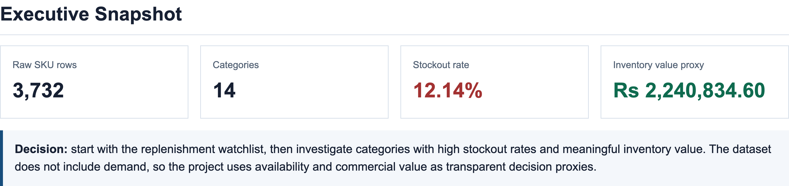
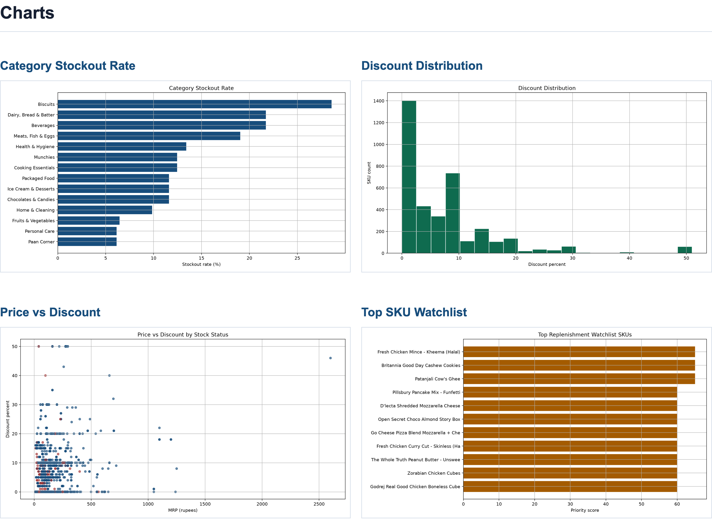
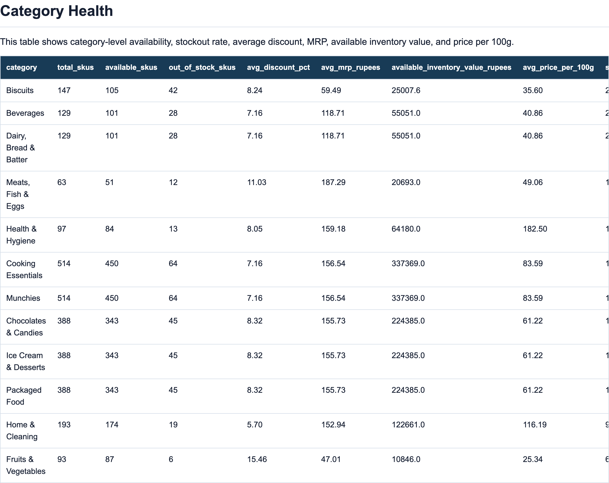
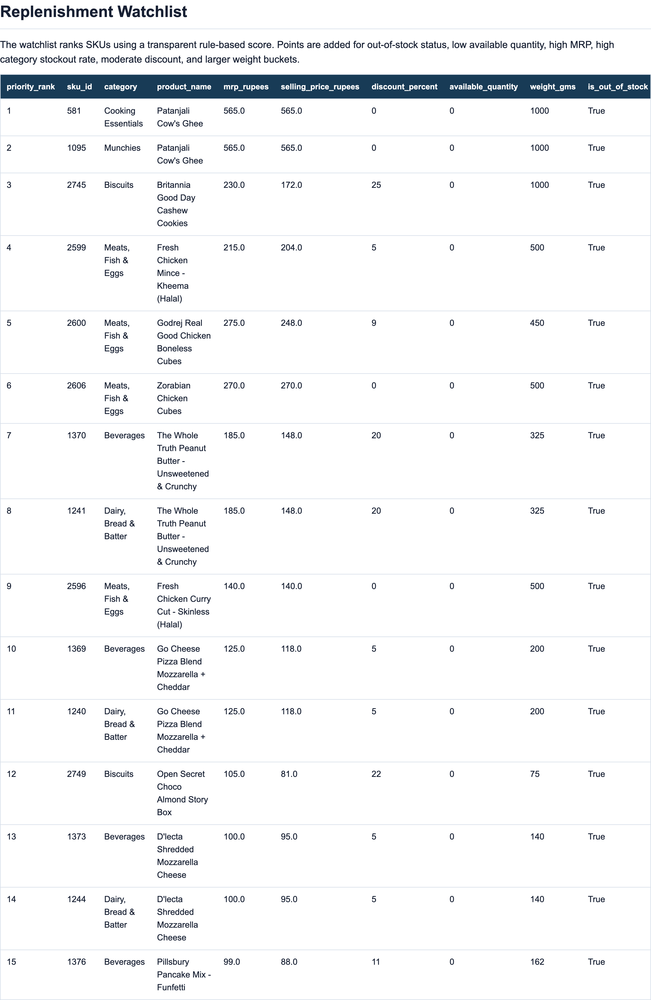

ATS Resume + Learning + Interview Pack
A complete black-and-white guide for learning, explaining and interviewing with the quick-commerce inventory analytics project.
Stack: SQL, Excel, Power BI-ready CSVs, Python, pandas, numpy, matplotlib, EDA, HTML/CSS.
Core decision: identify category availability gaps and rank SKUs for replenishment action.
| Part | What You Learn | Why Interviewers Care |
|---|---|---|
| 1 | Resume and ATS wording | Shortlisting depends on clear keywords and business impact. |
| 2 | Business fundamentals | DA/PA interviews reward context, not just code. |
| 3 | Data dictionary and jargon | You must explain every column and metric simply. |
| 4 | Python from basics to advanced | Cleaning, feature engineering and EDA are common fresher checks. |
| 5 | SQL from basics to advanced | SQL is the hardest-screened DA/PA skill. |
| 6 | Excel and BI | Business teams still expect Excel, pivots, dashboards and readable outputs. |
| 7 | LeetCode-style practice | You need to solve variations, not only explain finished code. |
| 8 | 85 interview questions | Covers easy, medium and hard follow-ups. |
| category | total_skus | available_skus | out_of_stock_skus | avg_discount_pct | avg_mrp_rupees | available_inventory_value_rupees | avg_price_per_100g | stockout_rate_pct |
|---|---|---|---|---|---|---|---|---|
| Biscuits | 147 | 105 | 42 | 8.24 | 59.49 | 25007.6 | 35.60 | 28.57 |
| Beverages | 129 | 101 | 28 | 7.16 | 118.71 | 55051.0 | 40.86 | 21.71 |
| Dairy, Bread & Batter | 129 | 101 | 28 | 7.16 | 118.71 | 55051.0 | 40.86 | 21.71 |
| Meats, Fish & Eggs | 63 | 51 | 12 | 11.03 | 187.29 | 20693.0 | 49.06 | 19.05 |
| Health & Hygiene | 97 | 84 | 13 | 8.05 | 159.18 | 64180.0 | 182.50 | 13.40 |
| Cooking Essentials | 514 | 450 | 64 | 7.16 | 156.54 | 337369.0 | 83.59 | 12.45 |
| Munchies | 514 | 450 | 64 | 7.16 | 156.54 | 337369.0 | 83.59 | 12.45 |
| Chocolates & Candies | 388 | 343 | 45 | 8.32 | 155.73 | 224385.0 | 61.22 | 11.60 |
| priority_rank | sku_id | category | product_name | mrp_rupees | selling_price_rupees | discount_percent | available_quantity | weight_gms | is_out_of_stock | stockout_rate_pct | available_inventory_value_rupees | priority_score |
|---|---|---|---|---|---|---|---|---|---|---|---|---|
| 1 | 581 | Cooking Essentials | Patanjali Cow's Ghee | 565.0 | 565.0 | 0 | 0 | 1000 | True | 12.45 | 0.0 | 65 |
| 2 | 1095 | Munchies | Patanjali Cow's Ghee | 565.0 | 565.0 | 0 | 0 | 1000 | True | 12.45 | 0.0 | 65 |
| 3 | 2745 | Biscuits | Britannia Good Day Cashew Cookies | 230.0 | 172.0 | 25 | 0 | 1000 | True | 28.57 | 0.0 | 65 |
| 4 | 2599 | Meats, Fish & Eggs | Fresh Chicken Mince - Kheema (Halal) | 215.0 | 204.0 | 5 | 0 | 500 | True | 19.05 | 0.0 | 65 |
| 5 | 2600 | Meats, Fish & Eggs | Godrej Real Good Chicken Boneless Cubes | 275.0 | 248.0 | 9 | 0 | 450 | True | 19.05 | 0.0 | 60 |
| 6 | 2606 | Meats, Fish & Eggs | Zorabian Chicken Cubes | 270.0 | 270.0 | 0 | 0 | 500 | True | 19.05 | 0.0 | 60 |
| 7 | 1370 | Beverages | The Whole Truth Peanut Butter - Unsweetened & Crunchy | 185.0 | 148.0 | 20 | 0 | 325 | True | 21.71 | 0.0 | 60 |
| 8 | 1241 | Dairy, Bread & Batter | The Whole Truth Peanut Butter - Unsweetened & Crunchy | 185.0 | 148.0 | 20 | 0 | 325 | True | 21.71 | 0.0 | 60 |
| sku_id | category | product_name | mrp_rupees | selling_price_rupees | discount_percent | discount_amount_rupees | available_quantity | available_discount_exposure_rupees | discount_band | is_out_of_stock |
|---|---|---|---|---|---|---|---|---|---|---|
| 518 | Cooking Essentials | Borges Extra Light Olive Oil Bottle | 2600.0 | 1399.0 | 46 | 1201.0 | 6 | 7206.0 | high | False |
| 1032 | Munchies | Borges Extra Light Olive Oil Bottle | 2600.0 | 1399.0 | 46 | 1201.0 | 6 | 7206.0 | high | False |
| 3017 | Personal Care | Pampers Pants - Large | 1549.0 | 849.0 | 45 | 700.0 | 3 | 2100.0 | high | False |
| 3361 | Paan Corner | Pampers Pants - Large | 1549.0 | 849.0 | 45 | 700.0 | 3 | 2100.0 | high | False |
| 255 | Cooking Essentials | Popular Essentials Californian Almond | 695.0 | 470.0 | 32 | 225.0 | 6 | 1350.0 | high | False |
| 769 | Munchies | Popular Essentials Californian Almond | 695.0 | 470.0 | 32 | 225.0 | 6 | 1350.0 | high | False |
| 1214 | Dairy, Bread & Batter | RRO Mascarpone Cheese | 355.0 | 177.0 | 50 | 178.0 | 6 | 1068.0 | high | False |
| 1343 | Beverages | RRO Mascarpone Cheese | 355.0 | 177.0 | 50 | 178.0 | 6 | 1068.0 | high | False |
SQL, Excel, Power BI, Python, pandas, numpy, matplotlib, EDA, data cleaning, data validation, inventory analytics, stockout analysis, SKU performance, quick commerce, category analytics, KPI dashboard, business intelligence, replenishment priority, discount analysis, window functions, CTEs, CASE WHEN, stakeholder reporting, decision analytics, root cause analysis, data storytelling.
| Weak | Better |
|---|---|
| Made a Zepto dashboard using Python and SQL. | Built a quick-commerce inventory analytics project to identify stockout-prone SKUs, category availability gaps and replenishment priorities across 3.7K+ SKU records. |
| Used pandas and matplotlib for EDA. | Used pandas to clean encoded CSV data, derive inventory value and price-per-100g features, then used matplotlib to explain category stockout and discount patterns. |
A quick-commerce app is useful only if customers can find and receive the product they want. If a product is unavailable, the business may lose the order. If many products in a category are unavailable, the category feels unreliable.
| Metric | Formula | Plain-English Meaning |
|---|---|---|
| Stockout rate | out-of-stock SKUs / total SKUs | How much of the assortment is unavailable. |
| Available inventory value | selling price x available quantity | Rough value of stock currently available. |
| Discount exposure | discount amount x available quantity | Where high discounts are concentrated. |
| Priority score | weighted rule | Which SKU should be investigated first. |
This section lets you explain jargon in plain language. Interviewers often check whether you can simplify technical terms.
| Term | Simplest Meaning | In This Project |
|---|---|---|
| Quick commerce | Delivery model where users expect groceries or essentials very quickly. | Zepto/Blinkit/Instamart-style business. |
| SKU | A specific sellable product variant. | Amul milk 500ml and Amul milk 1L are different SKUs. |
| Inventory | How much stock exists for products. | Available quantity in this project. |
| Stockout | When an item is unavailable. | A product with out_of_stock = TRUE or quantity <= 0. |
| Category health | A category-level view of availability and risk. | Biscuits stockout rate, average discount, SKU count. |
| MRP | Maximum retail price before discount. | Stored in paise in raw data. |
| Selling price | Customer-facing discounted price. | Also stored in paise before cleaning. |
| Discount exposure | Potential commercial pressure created by discounted available stock. | Discount amount x available quantity. |
| Proxy metric | A substitute metric used when the perfect metric is missing. | Inventory value proxy because true revenue/margin is absent. |
| KPI | Metric used to monitor performance. | Stockout rate, available SKUs, inventory value. |
| Guardrail | Metric that should not get worse while optimizing another metric. | Margin risk while improving availability. |
| Watchlist | Ranked action table. | Top SKUs operations should investigate. |
| CTE | Temporary named SQL result inside one query. | Used to make scoring query readable. |
| Window function | SQL function that calculates over a partition without collapsing rows. | ROW_NUMBER for ranking. |
| EDA | Exploratory data analysis. | Initial checks, distributions, patterns and outliers. |
| Column | Meaning | How Used | Interview Warning |
|---|---|---|---|
| category | Product category | Group by this to find category health. | Can be duplicated across products. |
| product_name | Name of the product | Used for SKU watchlist. | Names may repeat across categories. |
| mrp_paise | MRP in paise | Converted to rupees. | Must divide by 100. |
| discount_percent | Discount percentage | Used for discount bands and exposure. | High discount needs margin context. |
| available_quantity | Available inventory count | Used for low-stock and value calculations. | Snapshot only, not historical. |
| discounted_selling_price_paise | Selling price in paise | Converted to rupees. | Zero values are invalid for KPI analysis. |
| weight_gms | Product weight in grams | Used for price per 100g and weight bucket. | Zero values are invalid. |
| out_of_stock | Stockout flag | Used for stockout rate. | Also cross-checked with quantity. |
| pack_quantity | Package quantity field | Context for pack size. | May need business interpretation. |
| Feature | Logic | Why It Exists |
|---|---|---|
| mrp_rupees | mrp_paise / 100 | Makes price readable. |
| selling_price_rupees | discounted_selling_price_paise / 100 | Makes selling price readable. |
| is_out_of_stock | out_of_stock OR available_quantity <= 0 | Creates robust stockout flag. |
| has_invalid_commercials | price or weight <= 0 | Excludes invalid rows from commercial KPIs. |
| price_per_100g | selling_price / weight x 100 | Compares package sizes. |
| discount_band | no/low/medium/high | Simplifies dashboard filtering. |
| available_inventory_value_rupees | selling price x quantity | Proxy for available commercial value. |
| priority_score | weighted risk score | Ranks replenishment actions. |
encoding="cp1252" was used.| Level | What To Learn | How It Appears In QuickCommerceOps |
|---|---|---|
| Beginner | Rows, columns, data types, missing values | Schema check and raw data audit |
| Beginner | Basic SQL SELECT, WHERE, GROUP BY | Category SKU counts and stockout rate |
| Intermediate | CASE WHEN, CTEs, views, ranking | Clean inventory view and replenishment watchlist |
| Intermediate | pandas cleaning and feature creation | Price conversion, flags, buckets, inventory value |
| Advanced | Decision scoring and stakeholder explanation | Priority score and business recommendation |
| Advanced | Limitations and next-version design | Add demand, margin, expiry, lead time and dark-store IDs |
The goal is not decoration. Each output is tied to an interview explanation: what it shows, why it matters, and what action it supports.
Captured from the local report with headless Chrome at high device scale. The image is placed full-width to keep text and tables readable.

Captured from the local report with headless Chrome at high device scale. The image is placed full-width to keep text and tables readable.

Captured from the local report with headless Chrome at high device scale. The image is placed full-width to keep text and tables readable.

Captured from the local report with headless Chrome at high device scale. The image is placed full-width to keep text and tables readable.

This chapter is for reading code calmly. Most beginners struggle because small symbols feel mysterious. Here is what the symbols do in this project.
| Symbol | Where | Meaning | Example |
|---|---|---|---|
"text" | Python/SQL | A string: text value. | "category" |
[ ] | Python | Select column or create list. | df["mrp_paise"] |
( ) | Python/SQL | Function call or grouping. | round(value) |
{ } | Python | Dictionary or formatted block. | {"mrp": "mrp_paise"} |
. | Python | Access method/property. | df.rename() |
, | Python/SQL | Separates items. | category, product_name |
= | Python | Assignment. | ROOT = Path(...) |
== | Python/SQL | Equality check. | discount == 0 |
| | Python pandas | OR condition between Series. | a | b |
& | Python pandas | AND condition between Series. | a & b |
: | Python | Starts indented block. | def main(): |
; | SQL | Ends SQL statement. | SELECT * FROM table; |
-- | SQL | Comment. | -- Run after cleaning |
I built QuickCommerceOps to analyze SKU availability, stockout risk and replenishment priorities for a quick-commerce inventory dataset.
I used a Zepto-style SKU inventory dataset with 3.7K+ rows. I cleaned encoding and unit issues, converted prices from paise to rupees, created stockout and commercial validity flags, built SQL KPI views and created a replenishment watchlist. The final output helps operations teams prioritize unavailable or low-stock SKUs.
Situation: I wanted a portfolio project that felt close to quick-commerce operations.
Task: Build a project that went beyond charts and ended in an action list.
Action: I cleaned the dataset, built SQL views, created Python EDA, generated Excel-ready outputs and designed a replenishment score.
Result: The project produces a ranked SKU watchlist and category-health view that can be discussed as a real business decision model.
A Python library is pre-written code you import instead of writing everything yourself. In this project, libraries do three jobs: read data, calculate features, and draw charts.
| Concept | Simplest Explanation | Used In Project | Interview Depth |
|---|---|---|---|
| DataFrame | A table in Python. | Raw CSV becomes a DataFrame. | Rows are observations, columns are variables. |
| Series | One column from a DataFrame. | df["mrp_paise"] | Most vectorized operations happen on Series. |
read_csv | Reads CSV into a table. | Loads Zepto dataset. | Encoding, dtype inference, missing values and parsing errors matter. |
rename | Changes column names. | Converts raw names to snake_case. | Good naming reduces downstream errors. |
astype | Changes data type. | Converts numeric columns. | Important before math, grouping or exports. |
groupby | Groups rows. | Category health KPIs. | Equivalent to SQL GROUP BY. |
merge | Joins tables. | Adds category stockout context to SKU rows. | Equivalent to SQL JOIN; validate row counts. |
to_csv | Saves table. | Exports Excel/Power BI-ready files. | Turns analysis into stakeholder artifact. |
| Concept | Simplest Explanation | Used In Project |
|---|---|---|
np.where | Column-wise if/else. | Adds score points when a condition is true. |
np.select | Column-wise multi-rule if/else. | Creates discount and weight buckets. |
np.arange | Creates number sequence. | Creates SKU IDs and ranks. |
| Function | Simplest Explanation | Used In Project |
|---|---|---|
plt.barh | Horizontal bar chart. | Category stockout rate and watchlist chart. |
plt.hist | Distribution chart. | Discount percent distribution. |
plt.scatter | Relationship chart. | MRP vs discount by stock status. |
plt.savefig | Saves chart image. | Creates PNGs for the report. |
matplotlib.use("Agg") existsAgg is a non-GUI rendering backend. It lets Python save chart images without opening a window. This matters when scripts run in terminals, servers, or automated report jobs.
raw = pd.read_csv(RAW_CSV, encoding="cp1252")df = raw.rename(columns={
"Category": "category",
"name": "product_name",
"mrp": "mrp_paise",
"discountedSellingPrice": "discounted_selling_price_paise"
})df["mrp_rupees"] = (df["mrp_paise"].astype(float) / 100).round(2)
df["selling_price_rupees"] = (
df["discounted_selling_price_paise"].astype(float) / 100
).round(2)df["is_out_of_stock"] = df["out_of_stock"] | (df["available_quantity"] <= 0)
df["has_invalid_commercials"] = (
(df["mrp_paise"] <= 0)
| (df["discounted_selling_price_paise"] <= 0)
| (df["weight_gms"] <= 0)
)df["discount_band"] = np.select(
[
df["discount_percent"] == 0,
df["discount_percent"] < 10,
df["discount_percent"] < 25,
df["discount_percent"] >= 25,
],
["no discount", "low", "medium", "high"],
default="unknown",
)category_health = (
valid.groupby("category", as_index=False)
.agg(
total_skus=("sku_id", "count"),
out_of_stock_skus=("is_out_of_stock", lambda s: int(s.sum())),
avg_discount_pct=("discount_percent", "mean"),
available_inventory_value_rupees=("available_inventory_value_rupees", "sum"),
)
)with_context["priority_score"] = (
np.where(with_context["is_out_of_stock"], 45, 0)
+ np.where(with_context["available_quantity"].between(1, 2), 20, 0)
+ np.where(with_context["mrp_rupees"] >= 500, 15, 0)
+ np.where(with_context["stockout_rate_pct"] >= 15, 10, 0)
)SQL is excellent for repeatable KPI tables. Python is stronger for data diagnosis, feature engineering, chart generation and automated report creation. In this project, Python creates the clean CSV, EDA charts, Excel-ready outputs and the local report.
This is the actual file used in the project: python/eda_quick_commerce_ops.py. Read it in blocks. The right column explains the role of each line.
| Line | Code | Technical Term + Simple Meaning |
|---|---|---|
| 1 | from __future__ import annotations | Future import for postponed annotations. It makes type hints safer and cleaner; it does not change the business logic. |
| 2 | | Blank line. It separates blocks so your eyes can read the code in chunks. |
| 3 | import html | Standard-library HTML helper import. Used when building the report so special characters like < and > do not break the HTML page. |
| 4 | from pathlib import Path | Imports Path for object-based file paths. Lets the code handle folders and files cleanly instead of hard-coding messy strings. |
| 5 | | Blank line. It separates blocks so your eyes can read the code in chunks. |
| 6 | import matplotlib | Imports the base matplotlib plotting package. This is the chart-making library. |
| 7 | import numpy as np | Imports NumPy as np for vectorized numeric operations. It helps apply math and if/else rules to whole columns quickly. |
| 8 | import pandas as pd | Imports pandas as pd for DataFrame operations. pandas is the main table tool; it reads CSVs, cleans columns, groups data and exports results. |
| 9 | | Blank line. It separates blocks so your eyes can read the code in chunks. |
| 10 | matplotlib.use("Agg") | Sets matplotlib to the non-GUI Agg backend before importing pyplot. It saves chart images without opening a window, which is needed for automated reports. |
| 11 | import matplotlib.pyplot as plt | Imports matplotlib's charting interface as plt. plt is the short name used for commands like bar charts, histograms and saving images. |
| 12 | | Blank line. It separates blocks so your eyes can read the code in chunks. |
| 13 | ROOT = Path(__file__).resolve().parents[1] | Path constant. Stores an important folder/file location once so the rest of the script can reuse it. |
| 14 | RAW_CSV = ROOT / "data" / "raw" / "zepto_v2.csv" | Raw input path. Points to the original Zepto CSV file. |
| 15 | PROCESSED = ROOT / "data" / "processed" | Output folder path. Tells the script where to save cleaned data, Excel files, report files, charts or tables. |
| 16 | EXCEL = ROOT / "excel" | Output folder path. Tells the script where to save cleaned data, Excel files, report files, charts or tables. |
| 17 | REPORT = ROOT / "report" | Output folder path. Tells the script where to save cleaned data, Excel files, report files, charts or tables. |
| 18 | CHARTS = REPORT / "assets" / "charts" | Output folder path. Tells the script where to save cleaned data, Excel files, report files, charts or tables. |
| 19 | TABLES = REPORT / "assets" / "tables" | Output folder path. Tells the script where to save cleaned data, Excel files, report files, charts or tables. |
| 20 | | Blank line. It separates blocks so your eyes can read the code in chunks. |
| 21 | | Blank line. It separates blocks so your eyes can read the code in chunks. |
| 22 | def ensure_dirs() -> None: | Function definition. Creates a named recipe that can be reused later. |
| 23 | for path in [PROCESSED, EXCEL, CHARTS, TABLES]: | For loop. Repeats the same action for each item in a list, table or folder. |
| 24 | path.mkdir(parents=True, exist_ok=True) | Assignment. Stores a value, table, column or calculation result under a name so it can be reused. |
| 25 | | Blank line. It separates blocks so your eyes can read the code in chunks. |
| 26 | | Blank line. It separates blocks so your eyes can read the code in chunks. |
| 27 | def money(series: pd.Series) -> pd.Series: | Function definition. Creates a named recipe that can be reused later. |
| 28 | return (series.astype(float) / 100).round(2) | Return statement. Sends the final result of a function back to the part of the code that asked for it. |
| 29 | | Blank line. It separates blocks so your eyes can read the code in chunks. |
| 30 | | Blank line. It separates blocks so your eyes can read the code in chunks. |
| 31 | def load_and_clean() -> pd.DataFrame: | Function definition. Creates a named recipe that can be reused later. |
| 32 | raw = pd.read_csv(RAW_CSV, encoding="cp1252") | pandas CSV import into a DataFrame. Opens the raw CSV as a table Python can work with. |
| 33 | df = raw.rename( | Assignment. Stores a value, table, column or calculation result under a name so it can be reused. |
| 34 | columns={ | Assignment. Stores a value, table, column or calculation result under a name so it can be reused. |
| 35 | "Category": "category", | Implementation line. One step in cleaning data, calculating KPIs, exporting files or building the report. |
| 36 | "name": "product_name", | Implementation line. One step in cleaning data, calculating KPIs, exporting files or building the report. |
| 37 | "mrp": "mrp_paise", | Implementation line. One step in cleaning data, calculating KPIs, exporting files or building the report. |
| 38 | "discountPercent": "discount_percent", | Implementation line. One step in cleaning data, calculating KPIs, exporting files or building the report. |
| 39 | "availableQuantity": "available_quantity", | Implementation line. One step in cleaning data, calculating KPIs, exporting files or building the report. |
| 40 | "discountedSellingPrice": "discounted_selling_price_paise", | Implementation line. One step in cleaning data, calculating KPIs, exporting files or building the report. |
| 41 | "weightInGms": "weight_gms", | Implementation line. One step in cleaning data, calculating KPIs, exporting files or building the report. |
| 42 | "outOfStock": "out_of_stock", | Implementation line. One step in cleaning data, calculating KPIs, exporting files or building the report. |
| 43 | "quantity": "pack_quantity", | Implementation line. One step in cleaning data, calculating KPIs, exporting files or building the report. |
| 44 | } | Closing bracket. Ends a function call, list, dictionary or grouped block. |
| 45 | ).copy() | DataFrame copy. Makes a separate version so later edits do not accidentally affect the original table. |
| 46 | | Blank line. It separates blocks so your eyes can read the code in chunks. |
| 47 | text_columns = ["category", "product_name"] | Assignment. Stores a value, table, column or calculation result under a name so it can be reused. |
| 48 | for column in text_columns: | For loop. Repeats the same action for each item in a list, table or folder. |
| 49 | df[column] = ( | Assignment. Stores a value, table, column or calculation result under a name so it can be reused. |
| 50 | df[column] | Implementation line. One step in cleaning data, calculating KPIs, exporting files or building the report. |
| 51 | .astype(str) | Type conversion. Changes a column into the right kind of value, such as text, number or boolean. |
| 52 | .str.replace("\u2019", "'", regex=False) | pandas string operation. Cleans text values across a full column. |
| 53 | .str.replace("\u2018", "'", regex=False) | pandas string operation. Cleans text values across a full column. |
| 54 | .str.replace("\u201c", '"', regex=False) | pandas string operation. Cleans text values across a full column. |
| 55 | .str.replace("\u201d", '"', regex=False) | pandas string operation. Cleans text values across a full column. |
| 56 | .str.strip() | pandas string operation. Cleans text values across a full column. |
| 57 | ) | Closing bracket. Ends a function call, list, dictionary or grouped block. |
| 58 | | Blank line. It separates blocks so your eyes can read the code in chunks. |
| 59 | numeric_columns = [ | Assignment. Stores a value, table, column or calculation result under a name so it can be reused. |
| 60 | "mrp_paise", | Implementation line. One step in cleaning data, calculating KPIs, exporting files or building the report. |
| 61 | "discount_percent", | Implementation line. One step in cleaning data, calculating KPIs, exporting files or building the report. |
| 62 | "available_quantity", | Implementation line. One step in cleaning data, calculating KPIs, exporting files or building the report. |
| 63 | "discounted_selling_price_paise", | Implementation line. One step in cleaning data, calculating KPIs, exporting files or building the report. |
| 64 | "weight_gms", | Implementation line. One step in cleaning data, calculating KPIs, exporting files or building the report. |
| 65 | "pack_quantity", | Implementation line. One step in cleaning data, calculating KPIs, exporting files or building the report. |
| 66 | ] | Closing bracket. Ends a function call, list, dictionary or grouped block. |
| 67 | for column in numeric_columns: | For loop. Repeats the same action for each item in a list, table or folder. |
| 68 | df[column] = pd.to_numeric(df[column], errors="coerce") | Assignment. Stores a value, table, column or calculation result under a name so it can be reused. |
| 69 | | Blank line. It separates blocks so your eyes can read the code in chunks. |
| 70 | df["sku_id"] = np.arange(1, len(df) + 1) | Assignment. Stores a value, table, column or calculation result under a name so it can be reused. |
| 71 | df["mrp_rupees"] = money(df["mrp_paise"]) | Assignment. Stores a value, table, column or calculation result under a name so it can be reused. |
| 72 | df["selling_price_rupees"] = money(df["discounted_selling_price_paise"]) | Assignment. Stores a value, table, column or calculation result under a name so it can be reused. |
| 73 | df["discount_amount_rupees"] = (df["mrp_rupees"] - df["selling_price_rupees"]).round(2) | Rounding numeric values. Makes numbers readable for reports. |
| 74 | df["out_of_stock"] = df["out_of_stock"].astype(bool) | Type conversion. Changes a column into the right kind of value, such as text, number or boolean. |
| 75 | df["is_out_of_stock"] = (df["out_of_stock"]) | (df["available_quantity"].fillna(0) <= 0) | Missing-value replacement. Treats blank values safely before doing logic or math. |
| 76 | df["has_invalid_commercials"] = ( | Assignment. Stores a value, table, column or calculation result under a name so it can be reused. |
| 77 | (df["mrp_paise"].fillna(0) <= 0) | Missing-value replacement. Treats blank values safely before doing logic or math. |
| 78 | | (df["discounted_selling_price_paise"].fillna(0) <= 0) | Missing-value replacement. Treats blank values safely before doing logic or math. |
| 79 | | (df["weight_gms"].fillna(0) <= 0) | Missing-value replacement. Treats blank values safely before doing logic or math. |
| 80 | ) | Closing bracket. Ends a function call, list, dictionary or grouped block. |
| 81 | df["price_per_100g"] = np.where( | Vectorized if/else. Applies a rule to every row in a column at once. |
| 82 | df["weight_gms"] > 0, | Implementation line. One step in cleaning data, calculating KPIs, exporting files or building the report. |
| 83 | df["selling_price_rupees"] / (df["weight_gms"] / 100), | Implementation line. One step in cleaning data, calculating KPIs, exporting files or building the report. |
| 84 | np.nan, | Implementation line. One step in cleaning data, calculating KPIs, exporting files or building the report. |
| 85 | ) | Closing bracket. Ends a function call, list, dictionary or grouped block. |
| 86 | df["price_per_100g"] = df["price_per_100g"].round(2) | Rounding numeric values. Makes numbers readable for reports. |
| 87 | df["available_inventory_value_rupees"] = np.where( | Vectorized if/else. Applies a rule to every row in a column at once. |
| 88 | df["available_quantity"] > 0, | Implementation line. One step in cleaning data, calculating KPIs, exporting files or building the report. |
| 89 | df["available_quantity"] * df["selling_price_rupees"], | Implementation line. One step in cleaning data, calculating KPIs, exporting files or building the report. |
| 90 | 0, | Implementation line. One step in cleaning data, calculating KPIs, exporting files or building the report. |
| 91 | ).round(2) | Rounding numeric values. Makes numbers readable for reports. |
| 92 | | Blank line. It separates blocks so your eyes can read the code in chunks. |
| 93 | df["weight_bucket"] = np.select( | Multi-rule vectorized condition. Creates labels like low, medium and high from several rules. |
| 94 | [ | Implementation line. One step in cleaning data, calculating KPIs, exporting files or building the report. |
| 95 | df["weight_gms"] <= 0, | Assignment. Stores a value, table, column or calculation result under a name so it can be reused. |
| 96 | df["weight_gms"] < 100, | Implementation line. One step in cleaning data, calculating KPIs, exporting files or building the report. |
| 97 | df["weight_gms"] < 500, | Implementation line. One step in cleaning data, calculating KPIs, exporting files or building the report. |
| 98 | df["weight_gms"] <= 1000, | Assignment. Stores a value, table, column or calculation result under a name so it can be reused. |
| 99 | df["weight_gms"] > 1000, | Implementation line. One step in cleaning data, calculating KPIs, exporting files or building the report. |
| 100 | ], | Implementation line. One step in cleaning data, calculating KPIs, exporting files or building the report. |
| 101 | ["unknown", "tiny", "small", "standard", "bulk"], | Implementation line. One step in cleaning data, calculating KPIs, exporting files or building the report. |
| 102 | default="unknown", | Assignment. Stores a value, table, column or calculation result under a name so it can be reused. |
| 103 | ) | Closing bracket. Ends a function call, list, dictionary or grouped block. |
| 104 | df["discount_band"] = np.select( | Multi-rule vectorized condition. Creates labels like low, medium and high from several rules. |
| 105 | [ | Implementation line. One step in cleaning data, calculating KPIs, exporting files or building the report. |
| 106 | df["discount_percent"] == 0, | Assignment. Stores a value, table, column or calculation result under a name so it can be reused. |
| 107 | df["discount_percent"] < 10, | Implementation line. One step in cleaning data, calculating KPIs, exporting files or building the report. |
| 108 | df["discount_percent"] < 25, | Implementation line. One step in cleaning data, calculating KPIs, exporting files or building the report. |
| 109 | df["discount_percent"] >= 25, | Assignment. Stores a value, table, column or calculation result under a name so it can be reused. |
| 110 | ], | Implementation line. One step in cleaning data, calculating KPIs, exporting files or building the report. |
| 111 | ["no discount", "low", "medium", "high"], | Implementation line. One step in cleaning data, calculating KPIs, exporting files or building the report. |
| 112 | default="unknown", | Assignment. Stores a value, table, column or calculation result under a name so it can be reused. |
| 113 | ) | Closing bracket. Ends a function call, list, dictionary or grouped block. |
| 114 | df["availability_status"] = np.select( | Multi-rule vectorized condition. Creates labels like low, medium and high from several rules. |
| 115 | [ | Implementation line. One step in cleaning data, calculating KPIs, exporting files or building the report. |
| 116 | df["is_out_of_stock"], | Implementation line. One step in cleaning data, calculating KPIs, exporting files or building the report. |
| 117 | df["available_quantity"] <= 2, | Assignment. Stores a value, table, column or calculation result under a name so it can be reused. |
| 118 | df["available_quantity"] <= 4, | Assignment. Stores a value, table, column or calculation result under a name so it can be reused. |
| 119 | df["available_quantity"] > 4, | Implementation line. One step in cleaning data, calculating KPIs, exporting files or building the report. |
| 120 | ], | Implementation line. One step in cleaning data, calculating KPIs, exporting files or building the report. |
| 121 | ["out of stock", "low stock", "medium stock", "healthy stock"], | Implementation line. One step in cleaning data, calculating KPIs, exporting files or building the report. |
| 122 | default="unknown", | Assignment. Stores a value, table, column or calculation result under a name so it can be reused. |
| 123 | ) | Closing bracket. Ends a function call, list, dictionary or grouped block. |
| 124 | | Blank line. It separates blocks so your eyes can read the code in chunks. |
| 125 | ordered_columns = [ | Assignment. Stores a value, table, column or calculation result under a name so it can be reused. |
| 126 | "sku_id", | Implementation line. One step in cleaning data, calculating KPIs, exporting files or building the report. |
| 127 | "category", | Implementation line. One step in cleaning data, calculating KPIs, exporting files or building the report. |
| 128 | "product_name", | Implementation line. One step in cleaning data, calculating KPIs, exporting files or building the report. |
| 129 | "mrp_paise", | Implementation line. One step in cleaning data, calculating KPIs, exporting files or building the report. |
| 130 | "discounted_selling_price_paise", | Implementation line. One step in cleaning data, calculating KPIs, exporting files or building the report. |
| 131 | "mrp_rupees", | Implementation line. One step in cleaning data, calculating KPIs, exporting files or building the report. |
| 132 | "selling_price_rupees", | Implementation line. One step in cleaning data, calculating KPIs, exporting files or building the report. |
| 133 | "discount_percent", | Implementation line. One step in cleaning data, calculating KPIs, exporting files or building the report. |
| 134 | "discount_amount_rupees", | Implementation line. One step in cleaning data, calculating KPIs, exporting files or building the report. |
| 135 | "available_quantity", | Implementation line. One step in cleaning data, calculating KPIs, exporting files or building the report. |
| 136 | "weight_gms", | Implementation line. One step in cleaning data, calculating KPIs, exporting files or building the report. |
| 137 | "pack_quantity", | Implementation line. One step in cleaning data, calculating KPIs, exporting files or building the report. |
| 138 | "out_of_stock", | Implementation line. One step in cleaning data, calculating KPIs, exporting files or building the report. |
| 139 | "is_out_of_stock", | Implementation line. One step in cleaning data, calculating KPIs, exporting files or building the report. |
| 140 | "has_invalid_commercials", | Implementation line. One step in cleaning data, calculating KPIs, exporting files or building the report. |
| 141 | "price_per_100g", | Implementation line. One step in cleaning data, calculating KPIs, exporting files or building the report. |
| 142 | "weight_bucket", | Implementation line. One step in cleaning data, calculating KPIs, exporting files or building the report. |
| 143 | "discount_band", | Implementation line. One step in cleaning data, calculating KPIs, exporting files or building the report. |
| 144 | "availability_status", | Implementation line. One step in cleaning data, calculating KPIs, exporting files or building the report. |
| 145 | "available_inventory_value_rupees", | Implementation line. One step in cleaning data, calculating KPIs, exporting files or building the report. |
| 146 | ] | Closing bracket. Ends a function call, list, dictionary or grouped block. |
| 147 | return df[ordered_columns] | Return statement. Sends the final result of a function back to the part of the code that asked for it. |
| 148 | | Blank line. It separates blocks so your eyes can read the code in chunks. |
| 149 | | Blank line. It separates blocks so your eyes can read the code in chunks. |
| 150 | def build_tables(clean: pd.DataFrame) -> dict[str, pd.DataFrame]: | Function definition. Creates a named recipe that can be reused later. |
| 151 | valid = clean.loc[~clean["has_invalid_commercials"]].copy() | DataFrame copy. Makes a separate version so later edits do not accidentally affect the original table. |
| 152 | | Blank line. It separates blocks so your eyes can read the code in chunks. |
| 153 | category_health = ( | Assignment. Stores a value, table, column or calculation result under a name so it can be reused. |
| 154 | valid.groupby("category", as_index=False) | pandas groupby. Puts rows into buckets, such as one bucket per category. |
| 155 | .agg( | Aggregation. Turns many rows into summary numbers like count, sum and average. |
| 156 | total_skus=("sku_id", "count"), | Assignment. Stores a value, table, column or calculation result under a name so it can be reused. |
| 157 | available_skus=("is_out_of_stock", lambda s: int((~s).sum())), | Assignment. Stores a value, table, column or calculation result under a name so it can be reused. |
| 158 | out_of_stock_skus=("is_out_of_stock", lambda s: int(s.sum())), | Assignment. Stores a value, table, column or calculation result under a name so it can be reused. |
| 159 | avg_discount_pct=("discount_percent", "mean"), | Assignment. Stores a value, table, column or calculation result under a name so it can be reused. |
| 160 | avg_mrp_rupees=("mrp_rupees", "mean"), | Assignment. Stores a value, table, column or calculation result under a name so it can be reused. |
| 161 | available_inventory_value_rupees=("available_inventory_value_rupees", "sum"), | Assignment. Stores a value, table, column or calculation result under a name so it can be reused. |
| 162 | avg_price_per_100g=("price_per_100g", "mean"), | Assignment. Stores a value, table, column or calculation result under a name so it can be reused. |
| 163 | ) | Closing bracket. Ends a function call, list, dictionary or grouped block. |
| 164 | .assign( | DataFrame assign. Adds or updates columns while keeping the transformation readable. |
| 165 | stockout_rate_pct=lambda x: (x["out_of_stock_skus"] / x["total_skus"] * 100).round(2), | Rounding numeric values. Makes numbers readable for reports. |
| 166 | avg_discount_pct=lambda x: x["avg_discount_pct"].round(2), | Rounding numeric values. Makes numbers readable for reports. |
| 167 | avg_mrp_rupees=lambda x: x["avg_mrp_rupees"].round(2), | Rounding numeric values. Makes numbers readable for reports. |
| 168 | available_inventory_value_rupees=lambda x: x["available_inventory_value_rupees"].round(2), | Rounding numeric values. Makes numbers readable for reports. |
| 169 | avg_price_per_100g=lambda x: x["avg_price_per_100g"].round(2), | Rounding numeric values. Makes numbers readable for reports. |
| 170 | ) | Closing bracket. Ends a function call, list, dictionary or grouped block. |
| 171 | .sort_values(["stockout_rate_pct", "total_skus"], ascending=[False, False]) | DataFrame sorting. Orders rows so the most important items appear first. |
| 172 | ) | Closing bracket. Ends a function call, list, dictionary or grouped block. |
| 173 | | Blank line. It separates blocks so your eyes can read the code in chunks. |
| 174 | with_context = valid.merge( | DataFrame merge. Combines two tables using a common column, like category. |
| 175 | category_health[["category", "stockout_rate_pct"]], | Implementation line. One step in cleaning data, calculating KPIs, exporting files or building the report. |
| 176 | on="category", | Assignment. Stores a value, table, column or calculation result under a name so it can be reused. |
| 177 | how="left", | Assignment. Stores a value, table, column or calculation result under a name so it can be reused. |
| 178 | ) | Closing bracket. Ends a function call, list, dictionary or grouped block. |
| 179 | with_context["priority_score"] = ( | Assignment. Stores a value, table, column or calculation result under a name so it can be reused. |
| 180 | np.where(with_context["is_out_of_stock"], 45, 0) | Vectorized if/else. Applies a rule to every row in a column at once. |
| 181 | + np.where(with_context["available_quantity"].between(1, 2), 20, 0) | Vectorized if/else. Applies a rule to every row in a column at once. |
| 182 | + np.where(with_context["mrp_rupees"] >= 500, 15, 0) | Vectorized if/else. Applies a rule to every row in a column at once. |
| 183 | + np.where(with_context["stockout_rate_pct"] >= 15, 10, 0) | Vectorized if/else. Applies a rule to every row in a column at once. |
| 184 | + np.where(with_context["discount_percent"].between(5, 25), 5, 0) | Vectorized if/else. Applies a rule to every row in a column at once. |
| 185 | + np.where(with_context["weight_bucket"].isin(["standard", "bulk"]), 5, 0) | Vectorized if/else. Applies a rule to every row in a column at once. |
| 186 | ) | Closing bracket. Ends a function call, list, dictionary or grouped block. |
| 187 | watchlist = ( | Assignment. Stores a value, table, column or calculation result under a name so it can be reused. |
| 188 | with_context.loc[ | Implementation line. One step in cleaning data, calculating KPIs, exporting files or building the report. |
| 189 | with_context["is_out_of_stock"] | (with_context["available_quantity"] <= 2), | Assignment. Stores a value, table, column or calculation result under a name so it can be reused. |
| 190 | [ | Implementation line. One step in cleaning data, calculating KPIs, exporting files or building the report. |
| 191 | "sku_id", | Implementation line. One step in cleaning data, calculating KPIs, exporting files or building the report. |
| 192 | "category", | Implementation line. One step in cleaning data, calculating KPIs, exporting files or building the report. |
| 193 | "product_name", | Implementation line. One step in cleaning data, calculating KPIs, exporting files or building the report. |
| 194 | "mrp_rupees", | Implementation line. One step in cleaning data, calculating KPIs, exporting files or building the report. |
| 195 | "selling_price_rupees", | Implementation line. One step in cleaning data, calculating KPIs, exporting files or building the report. |
| 196 | "discount_percent", | Implementation line. One step in cleaning data, calculating KPIs, exporting files or building the report. |
| 197 | "available_quantity", | Implementation line. One step in cleaning data, calculating KPIs, exporting files or building the report. |
| 198 | "weight_gms", | Implementation line. One step in cleaning data, calculating KPIs, exporting files or building the report. |
| 199 | "is_out_of_stock", | Implementation line. One step in cleaning data, calculating KPIs, exporting files or building the report. |
| 200 | "stockout_rate_pct", | Implementation line. One step in cleaning data, calculating KPIs, exporting files or building the report. |
| 201 | "available_inventory_value_rupees", | Implementation line. One step in cleaning data, calculating KPIs, exporting files or building the report. |
| 202 | "priority_score", | Implementation line. One step in cleaning data, calculating KPIs, exporting files or building the report. |
| 203 | ], | Implementation line. One step in cleaning data, calculating KPIs, exporting files or building the report. |
| 204 | ] | Closing bracket. Ends a function call, list, dictionary or grouped block. |
| 205 | .sort_values(["priority_score", "mrp_rupees", "category", "product_name"], ascending=[False, False, True, True]) | DataFrame sorting. Orders rows so the most important items appear first. |
| 206 | .reset_index(drop=True) | Assignment. Stores a value, table, column or calculation result under a name so it can be reused. |
| 207 | ) | Closing bracket. Ends a function call, list, dictionary or grouped block. |
| 208 | watchlist.insert(0, "priority_rank", np.arange(1, len(watchlist) + 1)) | Implementation line. One step in cleaning data, calculating KPIs, exporting files or building the report. |
| 209 | | Blank line. It separates blocks so your eyes can read the code in chunks. |
| 210 | discount_exposure = valid.loc[valid["discount_percent"] >= 25].copy() | DataFrame copy. Makes a separate version so later edits do not accidentally affect the original table. |
| 211 | discount_exposure["available_discount_exposure_rupees"] = ( | Assignment. Stores a value, table, column or calculation result under a name so it can be reused. |
| 212 | discount_exposure["discount_amount_rupees"] * discount_exposure["available_quantity"] | Implementation line. One step in cleaning data, calculating KPIs, exporting files or building the report. |
| 213 | ).round(2) | Rounding numeric values. Makes numbers readable for reports. |
| 214 | discount_exposure = discount_exposure[ | Assignment. Stores a value, table, column or calculation result under a name so it can be reused. |
| 215 | [ | Implementation line. One step in cleaning data, calculating KPIs, exporting files or building the report. |
| 216 | "sku_id", | Implementation line. One step in cleaning data, calculating KPIs, exporting files or building the report. |
| 217 | "category", | Implementation line. One step in cleaning data, calculating KPIs, exporting files or building the report. |
| 218 | "product_name", | Implementation line. One step in cleaning data, calculating KPIs, exporting files or building the report. |
| 219 | "mrp_rupees", | Implementation line. One step in cleaning data, calculating KPIs, exporting files or building the report. |
| 220 | "selling_price_rupees", | Implementation line. One step in cleaning data, calculating KPIs, exporting files or building the report. |
| 221 | "discount_percent", | Implementation line. One step in cleaning data, calculating KPIs, exporting files or building the report. |
| 222 | "discount_amount_rupees", | Implementation line. One step in cleaning data, calculating KPIs, exporting files or building the report. |
| 223 | "available_quantity", | Implementation line. One step in cleaning data, calculating KPIs, exporting files or building the report. |
| 224 | "available_discount_exposure_rupees", | Implementation line. One step in cleaning data, calculating KPIs, exporting files or building the report. |
| 225 | "discount_band", | Implementation line. One step in cleaning data, calculating KPIs, exporting files or building the report. |
| 226 | "is_out_of_stock", | Implementation line. One step in cleaning data, calculating KPIs, exporting files or building the report. |
| 227 | ] | Closing bracket. Ends a function call, list, dictionary or grouped block. |
| 228 | ].sort_values(["available_discount_exposure_rupees", "discount_percent"], ascending=[False, False]) | DataFrame sorting. Orders rows so the most important items appear first. |
| 229 | | Blank line. It separates blocks so your eyes can read the code in chunks. |
| 230 | audit = pd.DataFrame( | Assignment. Stores a value, table, column or calculation result under a name so it can be reused. |
| 231 | [ | Implementation line. One step in cleaning data, calculating KPIs, exporting files or building the report. |
| 232 | {"metric": "raw_rows", "value": len(clean)}, | Implementation line. One step in cleaning data, calculating KPIs, exporting files or building the report. |
| 233 | {"metric": "valid_commercial_rows", "value": int((~clean["has_invalid_commercials"]).sum())}, | Implementation line. One step in cleaning data, calculating KPIs, exporting files or building the report. |
| 234 | {"metric": "invalid_commercial_rows", "value": int(clean["has_invalid_commercials"].sum())}, | Implementation line. One step in cleaning data, calculating KPIs, exporting files or building the report. |
| 235 | {"metric": "categories", "value": clean["category"].nunique()}, | Implementation line. One step in cleaning data, calculating KPIs, exporting files or building the report. |
| 236 | {"metric": "unique_product_names", "value": clean["product_name"].nunique()}, | Implementation line. One step in cleaning data, calculating KPIs, exporting files or building the report. |
| 237 | {"metric": "raw_stockout_rate_pct", "value": round(clean["is_out_of_stock"].mean() * 100, 2)}, | Implementation line. One step in cleaning data, calculating KPIs, exporting files or building the report. |
| 238 | {"metric": "avg_discount_pct", "value": round(valid["discount_percent"].mean(), 2)}, | Implementation line. One step in cleaning data, calculating KPIs, exporting files or building the report. |
| 239 | { | Implementation line. One step in cleaning data, calculating KPIs, exporting files or building the report. |
| 240 | "metric": "available_inventory_value_rupees", | Implementation line. One step in cleaning data, calculating KPIs, exporting files or building the report. |
| 241 | "value": round(valid["available_inventory_value_rupees"].sum(), 2), | Implementation line. One step in cleaning data, calculating KPIs, exporting files or building the report. |
| 242 | }, | Implementation line. One step in cleaning data, calculating KPIs, exporting files or building the report. |
| 243 | ] | Closing bracket. Ends a function call, list, dictionary or grouped block. |
| 244 | ) | Closing bracket. Ends a function call, list, dictionary or grouped block. |
| 245 | | Blank line. It separates blocks so your eyes can read the code in chunks. |
| 246 | decision_inputs = category_health.copy() | DataFrame copy. Makes a separate version so later edits do not accidentally affect the original table. |
| 247 | decision_inputs["target_stockout_rate_pct"] = 10.0 | Assignment. Stores a value, table, column or calculation result under a name so it can be reused. |
| 248 | decision_inputs["stockout_gap_pct"] = ( | Assignment. Stores a value, table, column or calculation result under a name so it can be reused. |
| 249 | decision_inputs["stockout_rate_pct"] - decision_inputs["target_stockout_rate_pct"] | Implementation line. One step in cleaning data, calculating KPIs, exporting files or building the report. |
| 250 | ).clip(lower=0).round(2) | Rounding numeric values. Makes numbers readable for reports. |
| 251 | decision_inputs["priority_category_flag"] = np.where( | Vectorized if/else. Applies a rule to every row in a column at once. |
| 252 | (decision_inputs["stockout_gap_pct"] > 0) | Implementation line. One step in cleaning data, calculating KPIs, exporting files or building the report. |
| 253 | & (decision_inputs["available_inventory_value_rupees"] >= decision_inputs["available_inventory_value_rupees"].median()), | Assignment. Stores a value, table, column or calculation result under a name so it can be reused. |
| 254 | "priority", | Implementation line. One step in cleaning data, calculating KPIs, exporting files or building the report. |
| 255 | "monitor", | Implementation line. One step in cleaning data, calculating KPIs, exporting files or building the report. |
| 256 | ) | Closing bracket. Ends a function call, list, dictionary or grouped block. |
| 257 | | Blank line. It separates blocks so your eyes can read the code in chunks. |
| 258 | return { | Return statement. Sends the final result of a function back to the part of the code that asked for it. |
| 259 | "clean_inventory": clean, | Implementation line. One step in cleaning data, calculating KPIs, exporting files or building the report. |
| 260 | "valid_inventory": valid, | Implementation line. One step in cleaning data, calculating KPIs, exporting files or building the report. |
| 261 | "category_health": category_health, | Implementation line. One step in cleaning data, calculating KPIs, exporting files or building the report. |
| 262 | "replenishment_watchlist": watchlist, | Implementation line. One step in cleaning data, calculating KPIs, exporting files or building the report. |
| 263 | "discount_exposure": discount_exposure, | Implementation line. One step in cleaning data, calculating KPIs, exporting files or building the report. |
| 264 | "data_audit": audit, | Implementation line. One step in cleaning data, calculating KPIs, exporting files or building the report. |
| 265 | "excel_decision_model_inputs": decision_inputs, | Implementation line. One step in cleaning data, calculating KPIs, exporting files or building the report. |
| 266 | } | Closing bracket. Ends a function call, list, dictionary or grouped block. |
| 267 | | Blank line. It separates blocks so your eyes can read the code in chunks. |
| 268 | | Blank line. It separates blocks so your eyes can read the code in chunks. |
| 269 | def save_tables(tables: dict[str, pd.DataFrame]) -> None: | Function definition. Creates a named recipe that can be reused later. |
| 270 | clean_for_sql = tables["clean_inventory"][ | Assignment. Stores a value, table, column or calculation result under a name so it can be reused. |
| 271 | [ | Implementation line. One step in cleaning data, calculating KPIs, exporting files or building the report. |
| 272 | "category", | Implementation line. One step in cleaning data, calculating KPIs, exporting files or building the report. |
| 273 | "product_name", | Implementation line. One step in cleaning data, calculating KPIs, exporting files or building the report. |
| 274 | "mrp_paise", | Implementation line. One step in cleaning data, calculating KPIs, exporting files or building the report. |
| 275 | "discount_percent", | Implementation line. One step in cleaning data, calculating KPIs, exporting files or building the report. |
| 276 | "available_quantity", | Implementation line. One step in cleaning data, calculating KPIs, exporting files or building the report. |
| 277 | "discounted_selling_price_paise", | Implementation line. One step in cleaning data, calculating KPIs, exporting files or building the report. |
| 278 | "weight_gms", | Implementation line. One step in cleaning data, calculating KPIs, exporting files or building the report. |
| 279 | "out_of_stock", | Implementation line. One step in cleaning data, calculating KPIs, exporting files or building the report. |
| 280 | "pack_quantity", | Implementation line. One step in cleaning data, calculating KPIs, exporting files or building the report. |
| 281 | ] | Closing bracket. Ends a function call, list, dictionary or grouped block. |
| 282 | ].copy() | DataFrame copy. Makes a separate version so later edits do not accidentally affect the original table. |
| 283 | clean_for_sql["out_of_stock"] = clean_for_sql["out_of_stock"].map({True: "TRUE", False: "FALSE"}) | Assignment. Stores a value, table, column or calculation result under a name so it can be reused. |
| 284 | clean_for_sql.to_csv(PROCESSED / "zepto_inventory_utf8.csv", index=False) | DataFrame CSV export. Saves the table so Excel, SQL, Power BI or the report can use it. |
| 285 | | Blank line. It separates blocks so your eyes can read the code in chunks. |
| 286 | for name, table in tables.items(): | For loop. Repeats the same action for each item in a list, table or folder. |
| 287 | table.to_csv(PROCESSED / f"{name}.csv", index=False) | DataFrame CSV export. Saves the table so Excel, SQL, Power BI or the report can use it. |
| 288 | | Blank line. It separates blocks so your eyes can read the code in chunks. |
| 289 | excel_exports = { | Assignment. Stores a value, table, column or calculation result under a name so it can be reused. |
| 290 | "category_health_for_excel.csv": tables["category_health"], | Implementation line. One step in cleaning data, calculating KPIs, exporting files or building the report. |
| 291 | "replenishment_watchlist_for_excel.csv": tables["replenishment_watchlist"], | Implementation line. One step in cleaning data, calculating KPIs, exporting files or building the report. |
| 292 | "discount_exposure_for_excel.csv": tables["discount_exposure"], | Implementation line. One step in cleaning data, calculating KPIs, exporting files or building the report. |
| 293 | "excel_decision_model_inputs.csv": tables["excel_decision_model_inputs"], | Implementation line. One step in cleaning data, calculating KPIs, exporting files or building the report. |
| 294 | } | Closing bracket. Ends a function call, list, dictionary or grouped block. |
| 295 | for filename, table in excel_exports.items(): | For loop. Repeats the same action for each item in a list, table or folder. |
| 296 | table.to_csv(EXCEL / filename, index=False) | DataFrame CSV export. Saves the table so Excel, SQL, Power BI or the report can use it. |
| 297 | | Blank line. It separates blocks so your eyes can read the code in chunks. |
| 298 | | Blank line. It separates blocks so your eyes can read the code in chunks. |
| 299 | def make_charts(tables: dict[str, pd.DataFrame]) -> None: | Function definition. Creates a named recipe that can be reused later. |
| 300 | plt.rcParams.update({"figure.figsize": (11, 6), "axes.grid": True}) | matplotlib plotting command. Draws or saves one part of a chart. |
| 301 | | Blank line. It separates blocks so your eyes can read the code in chunks. |
| 302 | category = tables["category_health"].sort_values("stockout_rate_pct", ascending=True) | DataFrame sorting. Orders rows so the most important items appear first. |
| 303 | plt.figure() | matplotlib plotting command. Draws or saves one part of a chart. |
| 304 | plt.barh(category["category"], category["stockout_rate_pct"], color="#174d7c") | matplotlib plotting command. Draws or saves one part of a chart. |
| 305 | plt.xlabel("Stockout rate (%)") | matplotlib plotting command. Draws or saves one part of a chart. |
| 306 | plt.title("Category Stockout Rate") | matplotlib plotting command. Draws or saves one part of a chart. |
| 307 | plt.tight_layout() | matplotlib plotting command. Draws or saves one part of a chart. |
| 308 | plt.savefig(CHARTS / "category_stockout_rate.png", dpi=160) | matplotlib plotting command. Draws or saves one part of a chart. |
| 309 | plt.close() | matplotlib plotting command. Draws or saves one part of a chart. |
| 310 | | Blank line. It separates blocks so your eyes can read the code in chunks. |
| 311 | valid = tables["valid_inventory"] | Assignment. Stores a value, table, column or calculation result under a name so it can be reused. |
| 312 | plt.figure() | matplotlib plotting command. Draws or saves one part of a chart. |
| 313 | plt.hist(valid["discount_percent"], bins=20, color="#0f6b4f", edgecolor="white") | matplotlib plotting command. Draws or saves one part of a chart. |
| 314 | plt.xlabel("Discount percent") | matplotlib plotting command. Draws or saves one part of a chart. |
| 315 | plt.ylabel("SKU count") | matplotlib plotting command. Draws or saves one part of a chart. |
| 316 | plt.title("Discount Distribution") | matplotlib plotting command. Draws or saves one part of a chart. |
| 317 | plt.tight_layout() | matplotlib plotting command. Draws or saves one part of a chart. |
| 318 | plt.savefig(CHARTS / "discount_distribution.png", dpi=160) | matplotlib plotting command. Draws or saves one part of a chart. |
| 319 | plt.close() | matplotlib plotting command. Draws or saves one part of a chart. |
| 320 | | Blank line. It separates blocks so your eyes can read the code in chunks. |
| 321 | plt.figure() | matplotlib plotting command. Draws or saves one part of a chart. |
| 322 | sample = valid.sample(min(1200, len(valid)), random_state=7) | Assignment. Stores a value, table, column or calculation result under a name so it can be reused. |
| 323 | colors = np.where(sample["is_out_of_stock"], "#a33232", "#174d7c") | Vectorized if/else. Applies a rule to every row in a column at once. |
| 324 | plt.scatter(sample["mrp_rupees"], sample["discount_percent"], c=colors, alpha=0.65, s=22) | matplotlib plotting command. Draws or saves one part of a chart. |
| 325 | plt.xlabel("MRP (rupees)") | matplotlib plotting command. Draws or saves one part of a chart. |
| 326 | plt.ylabel("Discount percent") | matplotlib plotting command. Draws or saves one part of a chart. |
| 327 | plt.title("Price vs Discount by Stock Status") | matplotlib plotting command. Draws or saves one part of a chart. |
| 328 | plt.tight_layout() | matplotlib plotting command. Draws or saves one part of a chart. |
| 329 | plt.savefig(CHARTS / "price_discount_stock_status.png", dpi=160) | matplotlib plotting command. Draws or saves one part of a chart. |
| 330 | plt.close() | matplotlib plotting command. Draws or saves one part of a chart. |
| 331 | | Blank line. It separates blocks so your eyes can read the code in chunks. |
| 332 | top_watchlist = tables["replenishment_watchlist"].head(15).sort_values("priority_score") | DataFrame sorting. Orders rows so the most important items appear first. |
| 333 | labels = top_watchlist["product_name"].str.slice(0, 38) | pandas string operation. Cleans text values across a full column. |
| 334 | plt.figure() | matplotlib plotting command. Draws or saves one part of a chart. |
| 335 | plt.barh(labels, top_watchlist["priority_score"], color="#a45b00") | matplotlib plotting command. Draws or saves one part of a chart. |
| 336 | plt.xlabel("Priority score") | matplotlib plotting command. Draws or saves one part of a chart. |
| 337 | plt.title("Top Replenishment Watchlist SKUs") | matplotlib plotting command. Draws or saves one part of a chart. |
| 338 | plt.tight_layout() | matplotlib plotting command. Draws or saves one part of a chart. |
| 339 | plt.savefig(CHARTS / "top_replenishment_watchlist.png", dpi=160) | matplotlib plotting command. Draws or saves one part of a chart. |
| 340 | plt.close() | matplotlib plotting command. Draws or saves one part of a chart. |
| 341 | | Blank line. It separates blocks so your eyes can read the code in chunks. |
| 342 | | Blank line. It separates blocks so your eyes can read the code in chunks. |
| 343 | def html_table(df: pd.DataFrame, max_rows: int = 10) -> str: | Function definition. Creates a named recipe that can be reused later. |
| 344 | display = df.head(max_rows).copy() | DataFrame copy. Makes a separate version so later edits do not accidentally affect the original table. |
| 345 | return display.to_html(index=False, classes="data-table", border=0, escape=True) | Return statement. Sends the final result of a function back to the part of the code that asked for it. |
| 346 | | Blank line. It separates blocks so your eyes can read the code in chunks. |
| 347 | | Blank line. It separates blocks so your eyes can read the code in chunks. |
| 348 | def format_number(value: float | int) -> str: | Function definition. Creates a named recipe that can be reused later. |
| 349 | if isinstance(value, float) and not value.is_integer(): | If condition. Runs this block only when the rule is true. |
| 350 | return f"{value:,.2f}" | Return statement. Sends the final result of a function back to the part of the code that asked for it. |
| 351 | return f"{value:,.0f}" | Return statement. Sends the final result of a function back to the part of the code that asked for it. |
| 352 | | Blank line. It separates blocks so your eyes can read the code in chunks. |
| 353 | | Blank line. It separates blocks so your eyes can read the code in chunks. |
| 354 | def generate_report(tables: dict[str, pd.DataFrame]) -> None: | Function definition. Creates a named recipe that can be reused later. |
| 355 | audit = tables["data_audit"].set_index("metric")["value"].to_dict() | Assignment. Stores a value, table, column or calculation result under a name so it can be reused. |
| 356 | category = tables["category_health"] | Assignment. Stores a value, table, column or calculation result under a name so it can be reused. |
| 357 | watchlist = tables["replenishment_watchlist"] | Assignment. Stores a value, table, column or calculation result under a name so it can be reused. |
| 358 | discount = tables["discount_exposure"] | Assignment. Stores a value, table, column or calculation result under a name so it can be reused. |
| 359 | | Blank line. It separates blocks so your eyes can read the code in chunks. |
| 360 | top_category = category.iloc[0] | Position-based row selection. Picks a row by its order number. |
| 361 | highest_value_category = category.sort_values("available_inventory_value_rupees", ascending=False).iloc[0] | DataFrame sorting. Orders rows so the most important items appear first. |
| 362 | top_sku = watchlist.iloc[0] | Position-based row selection. Picks a row by its order number. |
| 363 | | Blank line. It separates blocks so your eyes can read the code in chunks. |
| 364 | for name, table in { | For loop. Repeats the same action for each item in a list, table or folder. |
| 365 | "category_health_top.csv": category.head(12), | Takes first rows. Shows a small preview instead of the whole table. |
| 366 | "replenishment_watchlist_top.csv": watchlist.head(25), | Takes first rows. Shows a small preview instead of the whole table. |
| 367 | "discount_exposure_top.csv": discount.head(25), | Takes first rows. Shows a small preview instead of the whole table. |
| 368 | }.items(): | Implementation line. One step in cleaning data, calculating KPIs, exporting files or building the report. |
| 369 | table.to_csv(TABLES / name, index=False) | DataFrame CSV export. Saves the table so Excel, SQL, Power BI or the report can use it. |
| 370 | | Blank line. It separates blocks so your eyes can read the code in chunks. |
| 371 | html_doc = f"""<!doctype html> | Assignment. Stores a value, table, column or calculation result under a name so it can be reused. |
| 372 | <html lang="en"> | Assignment. Stores a value, table, column or calculation result under a name so it can be reused. |
| 373 | <head> | Implementation line. One step in cleaning data, calculating KPIs, exporting files or building the report. |
| 374 | <meta charset="utf-8"> | Assignment. Stores a value, table, column or calculation result under a name so it can be reused. |
| 375 | <meta name="viewport" content="width=device-width, initial-scale=1"> | Assignment. Stores a value, table, column or calculation result under a name so it can be reused. |
| 376 | <title>QuickCommerceOps Inventory Analytics</title> | Implementation line. One step in cleaning data, calculating KPIs, exporting files or building the report. |
| 377 | <link rel="stylesheet" href="styles.css"> | Assignment. Stores a value, table, column or calculation result under a name so it can be reused. |
| 378 | </head> | Implementation line. One step in cleaning data, calculating KPIs, exporting files or building the report. |
| 379 | <body> | Implementation line. One step in cleaning data, calculating KPIs, exporting files or building the report. |
| 380 | <main class="shell"> | Assignment. Stores a value, table, column or calculation result under a name so it can be reused. |
| 381 | <section class="hero"> | Assignment. Stores a value, table, column or calculation result under a name so it can be reused. |
| 382 | <p class="eyebrow">Quick-Commerce Inventory Analytics</p> | Assignment. Stores a value, table, column or calculation result under a name so it can be reused. |
| 383 | <h1>QuickCommerceOps</h1> | Implementation line. One step in cleaning data, calculating KPIs, exporting files or building the report. |
| 384 | <p class="subtitle">A local analytics project that turns a Zepto-style SKU inventory dataset into stockout insights, category health KPIs, discount exposure analysis, and a replenishment watchlist.</p> | Assignment. Stores a value, table, column or calculation result under a name so it can be reused. |
| 385 | <div> | Implementation line. One step in cleaning data, calculating KPIs, exporting files or building the report. |
| 386 | <span class="badge">SQL</span> | Assignment. Stores a value, table, column or calculation result under a name so it can be reused. |
| 387 | <span class="badge">Excel-ready CSV</span> | Assignment. Stores a value, table, column or calculation result under a name so it can be reused. |
| 388 | <span class="badge">Python pandas</span> | Assignment. Stores a value, table, column or calculation result under a name so it can be reused. |
| 389 | <span class="badge">numpy</span> | Assignment. Stores a value, table, column or calculation result under a name so it can be reused. |
| 390 | <span class="badge">matplotlib</span> | Assignment. Stores a value, table, column or calculation result under a name so it can be reused. |
| 391 | <span class="badge">HTML/CSS</span> | Assignment. Stores a value, table, column or calculation result under a name so it can be reused. |
| 392 | </div> | Implementation line. One step in cleaning data, calculating KPIs, exporting files or building the report. |
| 393 | </section> | Implementation line. One step in cleaning data, calculating KPIs, exporting files or building the report. |
| 394 | | Blank line. It separates blocks so your eyes can read the code in chunks. |
| 395 | <section> | Implementation line. One step in cleaning data, calculating KPIs, exporting files or building the report. |
| 396 | <h2>Executive Snapshot</h2> | Implementation line. One step in cleaning data, calculating KPIs, exporting files or building the report. |
| 397 | <div class="grid grid-4"> | Assignment. Stores a value, table, column or calculation result under a name so it can be reused. |
| 398 | <div class="card"><div class="metric-label">Raw SKU rows</div><div class="metric-value">{format_number(audit["raw_rows"])}</div></div> | Assignment. Stores a value, table, column or calculation result under a name so it can be reused. |
| 399 | <div class="card"><div class="metric-label">Categories</div><div class="metric-value">{format_number(audit["categories"])}</div></div> | Assignment. Stores a value, table, column or calculation result under a name so it can be reused. |
| 400 | <div class="card"><div class="metric-label">Stockout rate</div><div class="metric-value metric-bad">{format_number(audit["raw_stockout_rate_pct"])}%</div></div> | Assignment. Stores a value, table, column or calculation result under a name so it can be reused. |
| 401 | <div class="card"><div class="metric-label">Inventory value proxy</div><div class="metric-value metric-good">Rs {format_number(audit["available_inventory_value_rupees"])}</div></div> | Assignment. Stores a value, table, column or calculation result under a name so it can be reused. |
| 402 | </div> | Implementation line. One step in cleaning data, calculating KPIs, exporting files or building the report. |
| 403 | <div class="callout"> | Assignment. Stores a value, table, column or calculation result under a name so it can be reused. |
| 404 | <strong>Decision:</strong> start with the replenishment watchlist, then investigate categories with high stockout rates and meaningful inventory value. The dataset does not include demand, so the project uses availability and commercial value as transparent decision proxies. | Implementation line. One step in cleaning data, calculating KPIs, exporting files or building the report. |
| 405 | </div> | Implementation line. One step in cleaning data, calculating KPIs, exporting files or building the report. |
| 406 | </section> | Implementation line. One step in cleaning data, calculating KPIs, exporting files or building the report. |
| 407 | | Blank line. It separates blocks so your eyes can read the code in chunks. |
| 408 | <section> | Implementation line. One step in cleaning data, calculating KPIs, exporting files or building the report. |
| 409 | <h2>Business Problem</h2> | Implementation line. One step in cleaning data, calculating KPIs, exporting files or building the report. |
| 410 | <p>Quick-commerce customers expect products to be available immediately. Stockouts can reduce conversion, hurt trust, and push customers to substitute or leave. The goal of this project is to help an operations or category team identify which SKUs and categories need attention first.</p> | Implementation line. One step in cleaning data, calculating KPIs, exporting files or building the report. |
| 411 | <ol> | Implementation line. One step in cleaning data, calculating KPIs, exporting files or building the report. |
| 412 | <li>Find categories with weak availability.</li> | Implementation line. One step in cleaning data, calculating KPIs, exporting files or building the report. |
| 413 | <li>Rank out-of-stock and low-stock SKUs by operational priority.</li> | Implementation line. One step in cleaning data, calculating KPIs, exporting files or building the report. |
| 414 | <li>Highlight high-discount products where discount exposure is concentrated.</li> | Implementation line. One step in cleaning data, calculating KPIs, exporting files or building the report. |
| 415 | <li>Prepare clean tables for Excel and Power BI.</li> | Implementation line. One step in cleaning data, calculating KPIs, exporting files or building the report. |
| 416 | </ol> | Implementation line. One step in cleaning data, calculating KPIs, exporting files or building the report. |
| 417 | </section> | Implementation line. One step in cleaning data, calculating KPIs, exporting files or building the report. |
| 418 | | Blank line. It separates blocks so your eyes can read the code in chunks. |
| 419 | <section> | Implementation line. One step in cleaning data, calculating KPIs, exporting files or building the report. |
| 420 | <h2>Key Findings</h2> | Implementation line. One step in cleaning data, calculating KPIs, exporting files or building the report. |
| 421 | <div class="grid grid-2"> | Assignment. Stores a value, table, column or calculation result under a name so it can be reused. |
| 422 | <div class="card"> | Assignment. Stores a value, table, column or calculation result under a name so it can be reused. |
| 423 | <h3>Highest stockout category</h3> | Implementation line. One step in cleaning data, calculating KPIs, exporting files or building the report. |
| 424 | <p><strong>{html.escape(str(top_category["category"]))}</strong> has a stockout rate of <strong>{top_category["stockout_rate_pct"]}%</strong> across <strong>{int(top_category["total_skus"])}</strong> SKUs.</p> | Implementation line. One step in cleaning data, calculating KPIs, exporting files or building the report. |
| 425 | </div> | Implementation line. One step in cleaning data, calculating KPIs, exporting files or building the report. |
| 426 | <div class="card"> | Assignment. Stores a value, table, column or calculation result under a name so it can be reused. |
| 427 | <h3>Highest inventory value category</h3> | Implementation line. One step in cleaning data, calculating KPIs, exporting files or building the report. |
| 428 | <p><strong>{html.escape(str(highest_value_category["category"]))}</strong> carries the highest available inventory value proxy at <strong>Rs {format_number(highest_value_category["available_inventory_value_rupees"])}</strong>.</p> | Implementation line. One step in cleaning data, calculating KPIs, exporting files or building the report. |
| 429 | </div> | Implementation line. One step in cleaning data, calculating KPIs, exporting files or building the report. |
| 430 | <div class="card"> | Assignment. Stores a value, table, column or calculation result under a name so it can be reused. |
| 431 | <h3>Top replenishment SKU</h3> | Implementation line. One step in cleaning data, calculating KPIs, exporting files or building the report. |
| 432 | <p><strong>{html.escape(str(top_sku["product_name"]))}</strong> is ranked first in the watchlist with a priority score of <strong>{int(top_sku["priority_score"])}</strong>.</p> | Implementation line. One step in cleaning data, calculating KPIs, exporting files or building the report. |
| 433 | </div> | Implementation line. One step in cleaning data, calculating KPIs, exporting files or building the report. |
| 434 | <div class="card"> | Assignment. Stores a value, table, column or calculation result under a name so it can be reused. |
| 435 | <h3>Discount exposure</h3> | Implementation line. One step in cleaning data, calculating KPIs, exporting files or building the report. |
| 436 | <p>The high-discount table contains <strong>{format_number(len(discount))}</strong> SKUs with discount percent at or above 25%.</p> | Implementation line. One step in cleaning data, calculating KPIs, exporting files or building the report. |
| 437 | </div> | Implementation line. One step in cleaning data, calculating KPIs, exporting files or building the report. |
| 438 | </div> | Implementation line. One step in cleaning data, calculating KPIs, exporting files or building the report. |
| 439 | </section> | Implementation line. One step in cleaning data, calculating KPIs, exporting files or building the report. |
| 440 | | Blank line. It separates blocks so your eyes can read the code in chunks. |
| 441 | <section> | Implementation line. One step in cleaning data, calculating KPIs, exporting files or building the report. |
| 442 | <h2>Charts</h2> | Implementation line. One step in cleaning data, calculating KPIs, exporting files or building the report. |
| 443 | <div class="grid grid-2"> | Assignment. Stores a value, table, column or calculation result under a name so it can be reused. |
| 444 | <div><h3>Category Stockout Rate</h3><img class="chart" src="assets/charts/category_stockout_rate.png" alt="Category stockout rate chart"></div> | Assignment. Stores a value, table, column or calculation result under a name so it can be reused. |
| 445 | <div><h3>Discount Distribution</h3><img class="chart" src="assets/charts/discount_distribution.png" alt="Discount distribution chart"></div> | Assignment. Stores a value, table, column or calculation result under a name so it can be reused. |
| 446 | <div><h3>Price vs Discount</h3><img class="chart" src="assets/charts/price_discount_stock_status.png" alt="Price discount stock status chart"></div> | Assignment. Stores a value, table, column or calculation result under a name so it can be reused. |
| 447 | <div><h3>Top SKU Watchlist</h3><img class="chart" src="assets/charts/top_replenishment_watchlist.png" alt="Top replenishment watchlist chart"></div> | Assignment. Stores a value, table, column or calculation result under a name so it can be reused. |
| 448 | </div> | Implementation line. One step in cleaning data, calculating KPIs, exporting files or building the report. |
| 449 | </section> | Implementation line. One step in cleaning data, calculating KPIs, exporting files or building the report. |
| 450 | | Blank line. It separates blocks so your eyes can read the code in chunks. |
| 451 | <section> | Implementation line. One step in cleaning data, calculating KPIs, exporting files or building the report. |
| 452 | <h2>Category Health</h2> | Implementation line. One step in cleaning data, calculating KPIs, exporting files or building the report. |
| 453 | <p>This table shows category-level availability, stockout rate, average discount, MRP, available inventory value, and price per 100g.</p> | Implementation line. One step in cleaning data, calculating KPIs, exporting files or building the report. |
| 454 | <div class="table-wrap">{html_table(category, 12)}</div> | Assignment. Stores a value, table, column or calculation result under a name so it can be reused. |
| 455 | </section> | Implementation line. One step in cleaning data, calculating KPIs, exporting files or building the report. |
| 456 | | Blank line. It separates blocks so your eyes can read the code in chunks. |
| 457 | <section> | Implementation line. One step in cleaning data, calculating KPIs, exporting files or building the report. |
| 458 | <h2>Replenishment Watchlist</h2> | Implementation line. One step in cleaning data, calculating KPIs, exporting files or building the report. |
| 459 | <p>The watchlist ranks SKUs using a transparent rule-based score. Points are added for out-of-stock status, low available quantity, high MRP, high category stockout rate, moderate discount, and larger weight buckets.</p> | Implementation line. One step in cleaning data, calculating KPIs, exporting files or building the report. |
| 460 | <div class="table-wrap">{html_table(watchlist, 15)}</div> | Assignment. Stores a value, table, column or calculation result under a name so it can be reused. |
| 461 | </section> | Implementation line. One step in cleaning data, calculating KPIs, exporting files or building the report. |
| 462 | | Blank line. It separates blocks so your eyes can read the code in chunks. |
| 463 | <section> | Implementation line. One step in cleaning data, calculating KPIs, exporting files or building the report. |
| 464 | <h2>Discount Exposure</h2> | Implementation line. One step in cleaning data, calculating KPIs, exporting files or building the report. |
| 465 | <p>This table helps identify where heavy discounting is concentrated. It does not claim margin impact because true cost and margin data are not available.</p> | Implementation line. One step in cleaning data, calculating KPIs, exporting files or building the report. |
| 466 | <div class="table-wrap">{html_table(discount, 15)}</div> | Assignment. Stores a value, table, column or calculation result under a name so it can be reused. |
| 467 | </section> | Implementation line. One step in cleaning data, calculating KPIs, exporting files or building the report. |
| 468 | | Blank line. It separates blocks so your eyes can read the code in chunks. |
| 469 | <section> | Implementation line. One step in cleaning data, calculating KPIs, exporting files or building the report. |
| 470 | <h2>How To Explain This In Interview</h2> | Implementation line. One step in cleaning data, calculating KPIs, exporting files or building the report. |
| 471 | <ul> | Implementation line. One step in cleaning data, calculating KPIs, exporting files or building the report. |
| 472 | <li><strong>Problem:</strong> quick-commerce availability and replenishment prioritization.</li> | Implementation line. One step in cleaning data, calculating KPIs, exporting files or building the report. |
| 473 | <li><strong>Data:</strong> 3.7K+ SKU inventory records with category, price, discount, quantity, weight, and stock flag.</li> | Implementation line. One step in cleaning data, calculating KPIs, exporting files or building the report. |
| 474 | <li><strong>SQL:</strong> clean inventory view, category health view, discount exposure view, and replenishment watchlist.</li> | Implementation line. One step in cleaning data, calculating KPIs, exporting files or building the report. |
| 475 | <li><strong>Python:</strong> encoding fix, paise-to-rupee conversion, EDA, scoring, charts, and exports.</li> | Implementation line. One step in cleaning data, calculating KPIs, exporting files or building the report. |
| 476 | <li><strong>Excel:</strong> CSV outputs for pivot tables, lookups, conditional formatting, and what-if analysis.</li> | Implementation line. One step in cleaning data, calculating KPIs, exporting files or building the report. |
| 477 | <li><strong>Decision:</strong> prioritize unavailable or low-stock high-value SKUs in categories with weak availability.</li> | Implementation line. One step in cleaning data, calculating KPIs, exporting files or building the report. |
| 478 | </ul> | Implementation line. One step in cleaning data, calculating KPIs, exporting files or building the report. |
| 479 | </section> | Implementation line. One step in cleaning data, calculating KPIs, exporting files or building the report. |
| 480 | | Blank line. It separates blocks so your eyes can read the code in chunks. |
| 481 | <section> | Implementation line. One step in cleaning data, calculating KPIs, exporting files or building the report. |
| 482 | <h2>Limitations</h2> | Implementation line. One step in cleaning data, calculating KPIs, exporting files or building the report. |
| 483 | <p>This is an inventory snapshot, not a full company warehouse. It lacks demand, orders, delivery time, gross margin, dark-store ID, lead time, and expiry data. With those fields, the watchlist could be upgraded into a true lost-sales and replenishment model.</p> | Implementation line. One step in cleaning data, calculating KPIs, exporting files or building the report. |
| 484 | </section> | Implementation line. One step in cleaning data, calculating KPIs, exporting files or building the report. |
| 485 | | Blank line. It separates blocks so your eyes can read the code in chunks. |
| 486 | <p class="footer">Generated locally from the QuickCommerceOps project files.</p> | Assignment. Stores a value, table, column or calculation result under a name so it can be reused. |
| 487 | </main> | Implementation line. One step in cleaning data, calculating KPIs, exporting files or building the report. |
| 488 | </body> | Implementation line. One step in cleaning data, calculating KPIs, exporting files or building the report. |
| 489 | </html> | Implementation line. One step in cleaning data, calculating KPIs, exporting files or building the report. |
| 490 | """ | Implementation line. One step in cleaning data, calculating KPIs, exporting files or building the report. |
| 491 | (REPORT / "index.html").write_text(html_doc, encoding="utf-8") | Assignment. Stores a value, table, column or calculation result under a name so it can be reused. |
| 492 | | Blank line. It separates blocks so your eyes can read the code in chunks. |
| 493 | | Blank line. It separates blocks so your eyes can read the code in chunks. |
| 494 | def main() -> None: | Function definition. Creates a named recipe that can be reused later. |
| 495 | ensure_dirs() | Implementation line. One step in cleaning data, calculating KPIs, exporting files or building the report. |
| 496 | clean = load_and_clean() | Assignment. Stores a value, table, column or calculation result under a name so it can be reused. |
| 497 | tables = build_tables(clean) | Assignment. Stores a value, table, column or calculation result under a name so it can be reused. |
| 498 | save_tables(tables) | Implementation line. One step in cleaning data, calculating KPIs, exporting files or building the report. |
| 499 | make_charts(tables) | Implementation line. One step in cleaning data, calculating KPIs, exporting files or building the report. |
| 500 | generate_report(tables) | Implementation line. One step in cleaning data, calculating KPIs, exporting files or building the report. |
| 501 | print("Generated QuickCommerceOps processed tables, charts, Excel-ready CSVs, and HTML report.") | Implementation line. One step in cleaning data, calculating KPIs, exporting files or building the report. |
| 502 | | Blank line. It separates blocks so your eyes can read the code in chunks. |
| 503 | | Blank line. It separates blocks so your eyes can read the code in chunks. |
| 504 | if __name__ == "__main__": | If condition. Runs this block only when the rule is true. |
| 505 | main() | Implementation line. One step in cleaning data, calculating KPIs, exporting files or building the report. |
CREATE VIEW clean_inventory AS
SELECT
ROW_NUMBER() OVER (ORDER BY category, product_name) AS sku_id,
TRIM(category) AS category,
TRIM(product_name) AS product_name,
CAST(mrp_paise AS REAL) / 100.0 AS mrp_rupees,
CASE
WHEN LOWER(TRIM(out_of_stock)) = 'true'
OR CAST(available_quantity AS INTEGER) <= 0 THEN 1
ELSE 0
END AS is_out_of_stock
FROM raw_inventory;ROW_NUMBER() creates a stable SKU ID for analysis.TRIM cleans text fields.CASE WHEN turns business logic into a reusable flag.SELECT
category,
COUNT(*) AS total_skus,
SUM(CASE WHEN is_out_of_stock = 1 THEN 1 ELSE 0 END) AS out_of_stock_skus,
ROUND(100.0 * SUM(CASE WHEN is_out_of_stock = 1 THEN 1 ELSE 0 END) / COUNT(*), 2)
AS stockout_rate_pct,
ROUND(AVG(discount_percent), 2) AS avg_discount_pct
FROM valid_inventory
GROUP BY category
ORDER BY stockout_rate_pct DESC;WITH category_context AS (
SELECT category, stockout_rate_pct
FROM category_health
),
scored AS (
SELECT
v.product_name,
v.category,
v.mrp_rupees,
v.available_quantity,
(
CASE WHEN v.is_out_of_stock = 1 THEN 45 ELSE 0 END +
CASE WHEN v.available_quantity BETWEEN 1 AND 2 THEN 20 ELSE 0 END +
CASE WHEN v.mrp_rupees >= 500 THEN 15 ELSE 0 END +
CASE WHEN c.stockout_rate_pct >= 15 THEN 10 ELSE 0 END
) AS priority_score
FROM valid_inventory v
JOIN category_context c ON v.category = c.category
)
SELECT *
FROM scored
ORDER BY priority_score DESC, mrp_rupees DESC;I separated the SQL into layers: raw table, clean view, valid commercial view, category KPI view, watchlist view and exports. This is easier to debug and resembles how BI-ready tables are usually built.
These are the actual SQL scripts. Learn the file order first: load raw CSV, create clean views, answer business questions, export analysis tables.
| Line | Code | Technical Term + Simple Meaning |
|---|---|---|
| 1 | -- Run from the project root: | SQL comment. A note for humans; SQLite ignores it. |
| 2 | -- sqlite3 data/processed/quick_commerce_ops.db < sql/01_load_sqlite.sql | SQL comment. A note for humans; SQLite ignores it. |
| 3 | | Blank line. Separates SQL blocks so the script is easier to read. |
| 4 | DROP TABLE IF EXISTS raw_inventory; | DROP statement. Deletes the old table or view so you can rerun the script cleanly. |
| 5 | | Blank line. Separates SQL blocks so the script is easier to read. |
| 6 | CREATE TABLE raw_inventory ( | CREATE TABLE. Defines the empty table structure before loading CSV rows. |
| 7 | category TEXT, | SQL implementation line. Part of loading data, cleaning fields, calculating KPIs or exporting results. |
| 8 | product_name TEXT, | SQL implementation line. Part of loading data, cleaning fields, calculating KPIs or exporting results. |
| 9 | mrp_paise INTEGER, | SQL implementation line. Part of loading data, cleaning fields, calculating KPIs or exporting results. |
| 10 | discount_percent INTEGER, | SQL implementation line. Part of loading data, cleaning fields, calculating KPIs or exporting results. |
| 11 | available_quantity INTEGER, | SQL implementation line. Part of loading data, cleaning fields, calculating KPIs or exporting results. |
| 12 | discounted_selling_price_paise INTEGER, | SQL implementation line. Part of loading data, cleaning fields, calculating KPIs or exporting results. |
| 13 | weight_gms INTEGER, | SQL implementation line. Part of loading data, cleaning fields, calculating KPIs or exporting results. |
| 14 | out_of_stock TEXT, | SQL implementation line. Part of loading data, cleaning fields, calculating KPIs or exporting results. |
| 15 | pack_quantity INTEGER | SQL implementation line. Part of loading data, cleaning fields, calculating KPIs or exporting results. |
| 16 | ); | SQL statement terminator. The semicolon tells SQL this command is finished. |
| 17 | | Blank line. Separates SQL blocks so the script is easier to read. |
| 18 | .mode csv | SQLite CLI dot-command. A command for the sqlite3 terminal tool, not normal SQL. |
| 19 | .import --skip 1 data/processed/zepto_inventory_utf8.csv raw_inventory | SQLite CLI dot-command. A command for the sqlite3 terminal tool, not normal SQL. |
| Line | Code | Technical Term + Simple Meaning |
|---|---|---|
| 1 | -- Clean views and reusable KPI views. | SQL comment. A note for humans; SQLite ignores it. |
| 2 | -- Run after sql/01_load_sqlite.sql. | SQL comment. A note for humans; SQLite ignores it. |
| 3 | | Blank line. Separates SQL blocks so the script is easier to read. |
| 4 | DROP VIEW IF EXISTS clean_inventory; | DROP statement. Deletes the old table or view so you can rerun the script cleanly. |
| 5 | | Blank line. Separates SQL blocks so the script is easier to read. |
| 6 | CREATE VIEW clean_inventory AS | CREATE VIEW. Saves a query like a reusable virtual table. |
| 7 | SELECT | SELECT clause. Chooses which columns or calculations you want in the result. |
| 8 | ROW_NUMBER() OVER (ORDER BY category, product_name, mrp_paise, discounted_selling_price_paise) AS sku_id, | ROW_NUMBER window function. Gives rows a rank/order number based on the sorting rule. |
| 9 | TRIM(category) AS category, | SQL implementation line. Part of loading data, cleaning fields, calculating KPIs or exporting results. |
| 10 | TRIM(product_name) AS product_name, | SQL implementation line. Part of loading data, cleaning fields, calculating KPIs or exporting results. |
| 11 | CAST(mrp_paise AS REAL) / 100.0 AS mrp_rupees, | CAST. Converts a value into the needed type, such as number or decimal. |
| 12 | CAST(discounted_selling_price_paise AS REAL) / 100.0 AS selling_price_rupees, | CAST. Converts a value into the needed type, such as number or decimal. |
| 13 | CAST(discount_percent AS INTEGER) AS discount_percent, | CAST. Converts a value into the needed type, such as number or decimal. |
| 14 | (CAST(mrp_paise AS REAL) - CAST(discounted_selling_price_paise AS REAL)) / 100.0 AS discount_amount_rupees, | CAST. Converts a value into the needed type, such as number or decimal. |
| 15 | CAST(available_quantity AS INTEGER) AS available_quantity, | CAST. Converts a value into the needed type, such as number or decimal. |
| 16 | CAST(weight_gms AS INTEGER) AS weight_gms, | CAST. Converts a value into the needed type, such as number or decimal. |
| 17 | CAST(pack_quantity AS INTEGER) AS pack_quantity, | CAST. Converts a value into the needed type, such as number or decimal. |
| 18 | CASE | CASE expression. SQL's if/else logic. |
| 19 | WHEN LOWER(TRIM(out_of_stock)) = 'true' OR CAST(available_quantity AS INTEGER) <= 0 THEN 1 | CASE branch. One condition or fallback inside SQL if/else logic. |
| 20 | ELSE 0 | CASE branch. One condition or fallback inside SQL if/else logic. |
| 21 | END AS is_out_of_stock, | CASE branch. One condition or fallback inside SQL if/else logic. |
| 22 | CASE | CASE expression. SQL's if/else logic. |
| 23 | WHEN CAST(mrp_paise AS INTEGER) <= 0 THEN 1 | CASE branch. One condition or fallback inside SQL if/else logic. |
| 24 | WHEN CAST(discounted_selling_price_paise AS INTEGER) <= 0 THEN 1 | CASE branch. One condition or fallback inside SQL if/else logic. |
| 25 | WHEN CAST(weight_gms AS INTEGER) <= 0 THEN 1 | CASE branch. One condition or fallback inside SQL if/else logic. |
| 26 | ELSE 0 | CASE branch. One condition or fallback inside SQL if/else logic. |
| 27 | END AS has_invalid_commercials, | CASE branch. One condition or fallback inside SQL if/else logic. |
| 28 | CASE | CASE expression. SQL's if/else logic. |
| 29 | WHEN CAST(weight_gms AS INTEGER) <= 0 THEN NULL | CASE branch. One condition or fallback inside SQL if/else logic. |
| 30 | ELSE (CAST(discounted_selling_price_paise AS REAL) / 100.0) / (CAST(weight_gms AS REAL) / 100.0) | CASE branch. One condition or fallback inside SQL if/else logic. |
| 31 | END AS price_per_100g, | CASE branch. One condition or fallback inside SQL if/else logic. |
| 32 | CASE | CASE expression. SQL's if/else logic. |
| 33 | WHEN CAST(weight_gms AS INTEGER) <= 0 THEN 'unknown' | CASE branch. One condition or fallback inside SQL if/else logic. |
| 34 | WHEN CAST(weight_gms AS INTEGER) < 100 THEN 'tiny' | CASE branch. One condition or fallback inside SQL if/else logic. |
| 35 | WHEN CAST(weight_gms AS INTEGER) < 500 THEN 'small' | CASE branch. One condition or fallback inside SQL if/else logic. |
| 36 | WHEN CAST(weight_gms AS INTEGER) <= 1000 THEN 'standard' | CASE branch. One condition or fallback inside SQL if/else logic. |
| 37 | ELSE 'bulk' | CASE branch. One condition or fallback inside SQL if/else logic. |
| 38 | END AS weight_bucket, | CASE branch. One condition or fallback inside SQL if/else logic. |
| 39 | CASE | CASE expression. SQL's if/else logic. |
| 40 | WHEN CAST(discount_percent AS INTEGER) = 0 THEN 'no discount' | CASE branch. One condition or fallback inside SQL if/else logic. |
| 41 | WHEN CAST(discount_percent AS INTEGER) < 10 THEN 'low' | CASE branch. One condition or fallback inside SQL if/else logic. |
| 42 | WHEN CAST(discount_percent AS INTEGER) < 25 THEN 'medium' | CASE branch. One condition or fallback inside SQL if/else logic. |
| 43 | ELSE 'high' | CASE branch. One condition or fallback inside SQL if/else logic. |
| 44 | END AS discount_band, | CASE branch. One condition or fallback inside SQL if/else logic. |
| 45 | CASE | CASE expression. SQL's if/else logic. |
| 46 | WHEN CAST(available_quantity AS INTEGER) <= 0 THEN 0 | CASE branch. One condition or fallback inside SQL if/else logic. |
| 47 | ELSE (CAST(discounted_selling_price_paise AS REAL) / 100.0) * CAST(available_quantity AS INTEGER) | CASE branch. One condition or fallback inside SQL if/else logic. |
| 48 | END AS available_inventory_value_rupees | CASE branch. One condition or fallback inside SQL if/else logic. |
| 49 | FROM raw_inventory; | FROM clause. Tells SQL which table or view to read from. |
| 50 | | Blank line. Separates SQL blocks so the script is easier to read. |
| 51 | DROP VIEW IF EXISTS valid_inventory; | DROP statement. Deletes the old table or view so you can rerun the script cleanly. |
| 52 | | Blank line. Separates SQL blocks so the script is easier to read. |
| 53 | CREATE VIEW valid_inventory AS | CREATE VIEW. Saves a query like a reusable virtual table. |
| 54 | SELECT * | SELECT clause. Chooses which columns or calculations you want in the result. |
| 55 | FROM clean_inventory | FROM clause. Tells SQL which table or view to read from. |
| 56 | WHERE has_invalid_commercials = 0; | WHERE filter. Keeps only rows that match the rule. |
| 57 | | Blank line. Separates SQL blocks so the script is easier to read. |
| 58 | DROP VIEW IF EXISTS category_health; | DROP statement. Deletes the old table or view so you can rerun the script cleanly. |
| 59 | | Blank line. Separates SQL blocks so the script is easier to read. |
| 60 | CREATE VIEW category_health AS | CREATE VIEW. Saves a query like a reusable virtual table. |
| 61 | SELECT | SELECT clause. Chooses which columns or calculations you want in the result. |
| 62 | category, | SQL implementation line. Part of loading data, cleaning fields, calculating KPIs or exporting results. |
| 63 | COUNT(*) AS total_skus, | Aggregate function. Calculates KPI totals, counts or averages from many rows. |
| 64 | SUM(CASE WHEN is_out_of_stock = 0 THEN 1 ELSE 0 END) AS available_skus, | Aggregate function. Calculates KPI totals, counts or averages from many rows. |
| 65 | SUM(CASE WHEN is_out_of_stock = 1 THEN 1 ELSE 0 END) AS out_of_stock_skus, | Aggregate function. Calculates KPI totals, counts or averages from many rows. |
| 66 | ROUND(100.0 * SUM(CASE WHEN is_out_of_stock = 1 THEN 1 ELSE 0 END) / COUNT(*), 2) AS stockout_rate_pct, | ROUND. Makes decimal numbers cleaner for reports. |
| 67 | ROUND(AVG(discount_percent), 2) AS avg_discount_pct, | ROUND. Makes decimal numbers cleaner for reports. |
| 68 | ROUND(AVG(mrp_rupees), 2) AS avg_mrp_rupees, | ROUND. Makes decimal numbers cleaner for reports. |
| 69 | ROUND(SUM(available_inventory_value_rupees), 2) AS available_inventory_value_rupees, | ROUND. Makes decimal numbers cleaner for reports. |
| 70 | ROUND(AVG(price_per_100g), 2) AS avg_price_per_100g | ROUND. Makes decimal numbers cleaner for reports. |
| 71 | FROM valid_inventory | FROM clause. Tells SQL which table or view to read from. |
| 72 | GROUP BY category; | GROUP BY. Combines rows into summary groups, such as one row per category. |
| 73 | | Blank line. Separates SQL blocks so the script is easier to read. |
| 74 | DROP VIEW IF EXISTS replenishment_watchlist; | DROP statement. Deletes the old table or view so you can rerun the script cleanly. |
| 75 | | Blank line. Separates SQL blocks so the script is easier to read. |
| 76 | CREATE VIEW replenishment_watchlist AS | CREATE VIEW. Saves a query like a reusable virtual table. |
| 77 | WITH category_context AS ( | CTE start. Creates a named temporary mini-table inside the query. |
| 78 | SELECT | SELECT clause. Chooses which columns or calculations you want in the result. |
| 79 | category, | SQL implementation line. Part of loading data, cleaning fields, calculating KPIs or exporting results. |
| 80 | stockout_rate_pct, | SQL implementation line. Part of loading data, cleaning fields, calculating KPIs or exporting results. |
| 81 | available_inventory_value_rupees | SQL implementation line. Part of loading data, cleaning fields, calculating KPIs or exporting results. |
| 82 | FROM category_health | FROM clause. Tells SQL which table or view to read from. |
| 83 | ), | SQL implementation line. Part of loading data, cleaning fields, calculating KPIs or exporting results. |
| 84 | scored AS ( | SQL implementation line. Part of loading data, cleaning fields, calculating KPIs or exporting results. |
| 85 | SELECT | SELECT clause. Chooses which columns or calculations you want in the result. |
| 86 | v.sku_id, | SQL implementation line. Part of loading data, cleaning fields, calculating KPIs or exporting results. |
| 87 | v.category, | SQL implementation line. Part of loading data, cleaning fields, calculating KPIs or exporting results. |
| 88 | v.product_name, | SQL implementation line. Part of loading data, cleaning fields, calculating KPIs or exporting results. |
| 89 | v.mrp_rupees, | SQL implementation line. Part of loading data, cleaning fields, calculating KPIs or exporting results. |
| 90 | v.selling_price_rupees, | SQL implementation line. Part of loading data, cleaning fields, calculating KPIs or exporting results. |
| 91 | v.discount_percent, | SQL implementation line. Part of loading data, cleaning fields, calculating KPIs or exporting results. |
| 92 | v.available_quantity, | SQL implementation line. Part of loading data, cleaning fields, calculating KPIs or exporting results. |
| 93 | v.weight_gms, | SQL implementation line. Part of loading data, cleaning fields, calculating KPIs or exporting results. |
| 94 | v.is_out_of_stock, | SQL implementation line. Part of loading data, cleaning fields, calculating KPIs or exporting results. |
| 95 | c.stockout_rate_pct, | SQL implementation line. Part of loading data, cleaning fields, calculating KPIs or exporting results. |
| 96 | ROUND(v.available_inventory_value_rupees, 2) AS available_inventory_value_rupees, | ROUND. Makes decimal numbers cleaner for reports. |
| 97 | ( | SQL implementation line. Part of loading data, cleaning fields, calculating KPIs or exporting results. |
| 98 | CASE WHEN v.is_out_of_stock = 1 THEN 45 ELSE 0 END + | CASE expression. SQL's if/else logic. |
| 99 | CASE WHEN v.available_quantity BETWEEN 1 AND 2 THEN 20 ELSE 0 END + | CASE expression. SQL's if/else logic. |
| 100 | CASE WHEN v.mrp_rupees >= 500 THEN 15 ELSE 0 END + | CASE expression. SQL's if/else logic. |
| 101 | CASE WHEN c.stockout_rate_pct >= 15 THEN 10 ELSE 0 END + | CASE expression. SQL's if/else logic. |
| 102 | CASE WHEN v.discount_percent BETWEEN 5 AND 25 THEN 5 ELSE 0 END + | CASE expression. SQL's if/else logic. |
| 103 | CASE WHEN v.weight_bucket IN ('standard', 'bulk') THEN 5 ELSE 0 END | CASE expression. SQL's if/else logic. |
| 104 | ) AS priority_score | SQL implementation line. Part of loading data, cleaning fields, calculating KPIs or exporting results. |
| 105 | FROM valid_inventory v | FROM clause. Tells SQL which table or view to read from. |
| 106 | JOIN category_context c | JOIN. Combines two tables using a shared column. |
| 107 | ON v.category = c.category | SQL implementation line. Part of loading data, cleaning fields, calculating KPIs or exporting results. |
| 108 | ) | SQL implementation line. Part of loading data, cleaning fields, calculating KPIs or exporting results. |
| 109 | SELECT | SELECT clause. Chooses which columns or calculations you want in the result. |
| 110 | ROW_NUMBER() OVER (ORDER BY priority_score DESC, mrp_rupees DESC, category, product_name) AS priority_rank, | ROW_NUMBER window function. Gives rows a rank/order number based on the sorting rule. |
| 111 | * | SQL implementation line. Part of loading data, cleaning fields, calculating KPIs or exporting results. |
| 112 | FROM scored | FROM clause. Tells SQL which table or view to read from. |
| 113 | WHERE is_out_of_stock = 1 OR available_quantity <= 2 | WHERE filter. Keeps only rows that match the rule. |
| 114 | ORDER BY priority_score DESC, mrp_rupees DESC, category, product_name; | ORDER BY. Sorts the result so top or important rows appear first. |
| 115 | | Blank line. Separates SQL blocks so the script is easier to read. |
| 116 | DROP VIEW IF EXISTS discount_exposure; | DROP statement. Deletes the old table or view so you can rerun the script cleanly. |
| 117 | | Blank line. Separates SQL blocks so the script is easier to read. |
| 118 | CREATE VIEW discount_exposure AS | CREATE VIEW. Saves a query like a reusable virtual table. |
| 119 | SELECT | SELECT clause. Chooses which columns or calculations you want in the result. |
| 120 | sku_id, | SQL implementation line. Part of loading data, cleaning fields, calculating KPIs or exporting results. |
| 121 | category, | SQL implementation line. Part of loading data, cleaning fields, calculating KPIs or exporting results. |
| 122 | product_name, | SQL implementation line. Part of loading data, cleaning fields, calculating KPIs or exporting results. |
| 123 | mrp_rupees, | SQL implementation line. Part of loading data, cleaning fields, calculating KPIs or exporting results. |
| 124 | selling_price_rupees, | SQL implementation line. Part of loading data, cleaning fields, calculating KPIs or exporting results. |
| 125 | discount_percent, | SQL implementation line. Part of loading data, cleaning fields, calculating KPIs or exporting results. |
| 126 | discount_amount_rupees, | SQL implementation line. Part of loading data, cleaning fields, calculating KPIs or exporting results. |
| 127 | available_quantity, | SQL implementation line. Part of loading data, cleaning fields, calculating KPIs or exporting results. |
| 128 | ROUND(discount_amount_rupees * available_quantity, 2) AS available_discount_exposure_rupees, | ROUND. Makes decimal numbers cleaner for reports. |
| 129 | discount_band, | SQL implementation line. Part of loading data, cleaning fields, calculating KPIs or exporting results. |
| 130 | is_out_of_stock | SQL implementation line. Part of loading data, cleaning fields, calculating KPIs or exporting results. |
| 131 | FROM valid_inventory | FROM clause. Tells SQL which table or view to read from. |
| 132 | WHERE discount_percent >= 25 | WHERE filter. Keeps only rows that match the rule. |
| 133 | ORDER BY available_discount_exposure_rupees DESC, discount_percent DESC; | ORDER BY. Sorts the result so top or important rows appear first. |
| 134 | | Blank line. Separates SQL blocks so the script is easier to read. |
| Line | Code | Technical Term + Simple Meaning |
|---|---|---|
| 1 | -- Business questions for interview practice. | SQL comment. A note for humans; SQLite ignores it. |
| 2 | -- Run after sql/02_clean_views.sql. | SQL comment. A note for humans; SQLite ignores it. |
| 3 | | Blank line. Separates SQL blocks so the script is easier to read. |
| 4 | .headers on | SQLite CLI dot-command. A command for the sqlite3 terminal tool, not normal SQL. |
| 5 | .mode column | SQLite CLI dot-command. A command for the sqlite3 terminal tool, not normal SQL. |
| 6 | | Blank line. Separates SQL blocks so the script is easier to read. |
| 7 | -- 1. Data audit: how many rows are valid for commercial analysis? | SQL comment. A note for humans; SQLite ignores it. |
| 8 | SELECT | SELECT clause. Chooses which columns or calculations you want in the result. |
| 9 | COUNT(*) AS raw_rows, | Aggregate function. Calculates KPI totals, counts or averages from many rows. |
| 10 | SUM(CASE WHEN has_invalid_commercials = 1 THEN 1 ELSE 0 END) AS invalid_commercial_rows, | Aggregate function. Calculates KPI totals, counts or averages from many rows. |
| 11 | SUM(CASE WHEN has_invalid_commercials = 0 THEN 1 ELSE 0 END) AS valid_rows, | Aggregate function. Calculates KPI totals, counts or averages from many rows. |
| 12 | ROUND(100.0 * SUM(CASE WHEN is_out_of_stock = 1 THEN 1 ELSE 0 END) / COUNT(*), 2) AS raw_stockout_rate_pct | ROUND. Makes decimal numbers cleaner for reports. |
| 13 | FROM clean_inventory; | FROM clause. Tells SQL which table or view to read from. |
| 14 | | Blank line. Separates SQL blocks so the script is easier to read. |
| 15 | -- 2. Which categories have the highest stockout rate? | SQL comment. A note for humans; SQLite ignores it. |
| 16 | SELECT | SELECT clause. Chooses which columns or calculations you want in the result. |
| 17 | category, | SQL implementation line. Part of loading data, cleaning fields, calculating KPIs or exporting results. |
| 18 | total_skus, | SQL implementation line. Part of loading data, cleaning fields, calculating KPIs or exporting results. |
| 19 | out_of_stock_skus, | SQL implementation line. Part of loading data, cleaning fields, calculating KPIs or exporting results. |
| 20 | stockout_rate_pct, | SQL implementation line. Part of loading data, cleaning fields, calculating KPIs or exporting results. |
| 21 | avg_discount_pct, | SQL implementation line. Part of loading data, cleaning fields, calculating KPIs or exporting results. |
| 22 | available_inventory_value_rupees | SQL implementation line. Part of loading data, cleaning fields, calculating KPIs or exporting results. |
| 23 | FROM category_health | FROM clause. Tells SQL which table or view to read from. |
| 24 | ORDER BY stockout_rate_pct DESC, total_skus DESC | ORDER BY. Sorts the result so top or important rows appear first. |
| 25 | LIMIT 10; | SQL statement terminator. The semicolon tells SQL this command is finished. |
| 26 | | Blank line. Separates SQL blocks so the script is easier to read. |
| 27 | -- 3. Which high-MRP SKUs are currently unavailable? | SQL comment. A note for humans; SQLite ignores it. |
| 28 | SELECT | SELECT clause. Chooses which columns or calculations you want in the result. |
| 29 | product_name, | SQL implementation line. Part of loading data, cleaning fields, calculating KPIs or exporting results. |
| 30 | category, | SQL implementation line. Part of loading data, cleaning fields, calculating KPIs or exporting results. |
| 31 | mrp_rupees, | SQL implementation line. Part of loading data, cleaning fields, calculating KPIs or exporting results. |
| 32 | selling_price_rupees, | SQL implementation line. Part of loading data, cleaning fields, calculating KPIs or exporting results. |
| 33 | discount_percent, | SQL implementation line. Part of loading data, cleaning fields, calculating KPIs or exporting results. |
| 34 | stockout_rate_pct | SQL implementation line. Part of loading data, cleaning fields, calculating KPIs or exporting results. |
| 35 | FROM replenishment_watchlist | FROM clause. Tells SQL which table or view to read from. |
| 36 | WHERE is_out_of_stock = 1 | WHERE filter. Keeps only rows that match the rule. |
| 37 | ORDER BY mrp_rupees DESC | ORDER BY. Sorts the result so top or important rows appear first. |
| 38 | LIMIT 20; | SQL statement terminator. The semicolon tells SQL this command is finished. |
| 39 | | Blank line. Separates SQL blocks so the script is easier to read. |
| 40 | -- 4. Which SKUs should the operations team prioritize first? | SQL comment. A note for humans; SQLite ignores it. |
| 41 | SELECT | SELECT clause. Chooses which columns or calculations you want in the result. |
| 42 | priority_rank, | SQL implementation line. Part of loading data, cleaning fields, calculating KPIs or exporting results. |
| 43 | product_name, | SQL implementation line. Part of loading data, cleaning fields, calculating KPIs or exporting results. |
| 44 | category, | SQL implementation line. Part of loading data, cleaning fields, calculating KPIs or exporting results. |
| 45 | priority_score, | SQL implementation line. Part of loading data, cleaning fields, calculating KPIs or exporting results. |
| 46 | available_quantity, | SQL implementation line. Part of loading data, cleaning fields, calculating KPIs or exporting results. |
| 47 | is_out_of_stock, | SQL implementation line. Part of loading data, cleaning fields, calculating KPIs or exporting results. |
| 48 | mrp_rupees, | SQL implementation line. Part of loading data, cleaning fields, calculating KPIs or exporting results. |
| 49 | discount_percent, | SQL implementation line. Part of loading data, cleaning fields, calculating KPIs or exporting results. |
| 50 | stockout_rate_pct | SQL implementation line. Part of loading data, cleaning fields, calculating KPIs or exporting results. |
| 51 | FROM replenishment_watchlist | FROM clause. Tells SQL which table or view to read from. |
| 52 | ORDER BY priority_rank | ORDER BY. Sorts the result so top or important rows appear first. |
| 53 | LIMIT 25; | SQL statement terminator. The semicolon tells SQL this command is finished. |
| 54 | | Blank line. Separates SQL blocks so the script is easier to read. |
| 55 | -- 5. Where is discount exposure concentrated? | SQL comment. A note for humans; SQLite ignores it. |
| 56 | SELECT | SELECT clause. Chooses which columns or calculations you want in the result. |
| 57 | category, | SQL implementation line. Part of loading data, cleaning fields, calculating KPIs or exporting results. |
| 58 | COUNT(*) AS high_discount_skus, | Aggregate function. Calculates KPI totals, counts or averages from many rows. |
| 59 | ROUND(AVG(discount_percent), 2) AS avg_discount_pct, | ROUND. Makes decimal numbers cleaner for reports. |
| 60 | ROUND(SUM(available_discount_exposure_rupees), 2) AS discount_exposure_rupees | ROUND. Makes decimal numbers cleaner for reports. |
| 61 | FROM discount_exposure | FROM clause. Tells SQL which table or view to read from. |
| 62 | GROUP BY category | GROUP BY. Combines rows into summary groups, such as one row per category. |
| 63 | ORDER BY discount_exposure_rupees DESC; | ORDER BY. Sorts the result so top or important rows appear first. |
| 64 | | Blank line. Separates SQL blocks so the script is easier to read. |
| 65 | -- 6. Which categories carry the highest available inventory value? | SQL comment. A note for humans; SQLite ignores it. |
| 66 | SELECT | SELECT clause. Chooses which columns or calculations you want in the result. |
| 67 | category, | SQL implementation line. Part of loading data, cleaning fields, calculating KPIs or exporting results. |
| 68 | available_inventory_value_rupees, | SQL implementation line. Part of loading data, cleaning fields, calculating KPIs or exporting results. |
| 69 | total_skus, | SQL implementation line. Part of loading data, cleaning fields, calculating KPIs or exporting results. |
| 70 | available_skus, | SQL implementation line. Part of loading data, cleaning fields, calculating KPIs or exporting results. |
| 71 | stockout_rate_pct | SQL implementation line. Part of loading data, cleaning fields, calculating KPIs or exporting results. |
| 72 | FROM category_health | FROM clause. Tells SQL which table or view to read from. |
| 73 | ORDER BY available_inventory_value_rupees DESC | ORDER BY. Sorts the result so top or important rows appear first. |
| 74 | LIMIT 10; | SQL statement terminator. The semicolon tells SQL this command is finished. |
| 75 | | Blank line. Separates SQL blocks so the script is easier to read. |
| 76 | -- 7. How do weight buckets behave across stock status? | SQL comment. A note for humans; SQLite ignores it. |
| 77 | SELECT | SELECT clause. Chooses which columns or calculations you want in the result. |
| 78 | weight_bucket, | SQL implementation line. Part of loading data, cleaning fields, calculating KPIs or exporting results. |
| 79 | COUNT(*) AS sku_count, | Aggregate function. Calculates KPI totals, counts or averages from many rows. |
| 80 | ROUND(100.0 * SUM(CASE WHEN is_out_of_stock = 1 THEN 1 ELSE 0 END) / COUNT(*), 2) AS stockout_rate_pct, | ROUND. Makes decimal numbers cleaner for reports. |
| 81 | ROUND(AVG(price_per_100g), 2) AS avg_price_per_100g | ROUND. Makes decimal numbers cleaner for reports. |
| 82 | FROM valid_inventory | FROM clause. Tells SQL which table or view to read from. |
| 83 | GROUP BY weight_bucket | GROUP BY. Combines rows into summary groups, such as one row per category. |
| 84 | ORDER BY sku_count DESC; | ORDER BY. Sorts the result so top or important rows appear first. |
| 85 | | Blank line. Separates SQL blocks so the script is easier to read. |
| Line | Code | Technical Term + Simple Meaning |
|---|---|---|
| 1 | -- Export SQL-built analysis tables for Excel, Power BI, and report use. | SQL comment. A note for humans; SQLite ignores it. |
| 2 | -- Run from project root after sql/02_clean_views.sql. | SQL comment. A note for humans; SQLite ignores it. |
| 3 | | Blank line. Separates SQL blocks so the script is easier to read. |
| 4 | .headers on | SQLite CLI dot-command. A command for the sqlite3 terminal tool, not normal SQL. |
| 5 | .mode csv | SQLite CLI dot-command. A command for the sqlite3 terminal tool, not normal SQL. |
| 6 | | Blank line. Separates SQL blocks so the script is easier to read. |
| 7 | .once data/processed/sql_category_health.csv | SQLite CLI dot-command. A command for the sqlite3 terminal tool, not normal SQL. |
| 8 | SELECT * FROM category_health ORDER BY stockout_rate_pct DESC, total_skus DESC; | SELECT clause. Chooses which columns or calculations you want in the result. |
| 9 | | Blank line. Separates SQL blocks so the script is easier to read. |
| 10 | .once data/processed/sql_replenishment_watchlist.csv | SQLite CLI dot-command. A command for the sqlite3 terminal tool, not normal SQL. |
| 11 | SELECT * FROM replenishment_watchlist ORDER BY priority_rank; | SELECT clause. Chooses which columns or calculations you want in the result. |
| 12 | | Blank line. Separates SQL blocks so the script is easier to read. |
| 13 | .once data/processed/sql_discount_exposure.csv | SQLite CLI dot-command. A command for the sqlite3 terminal tool, not normal SQL. |
| 14 | SELECT * FROM discount_exposure ORDER BY available_discount_exposure_rupees DESC; | SELECT clause. Chooses which columns or calculations you want in the result. |
| 15 | | Blank line. Separates SQL blocks so the script is easier to read. |
| 16 | .once data/processed/sql_clean_inventory_sample.csv | SQLite CLI dot-command. A command for the sqlite3 terminal tool, not normal SQL. |
| 17 | SELECT * FROM clean_inventory ORDER BY sku_id LIMIT 500; | SELECT clause. Chooses which columns or calculations you want in the result. |
| 18 | | Blank line. Separates SQL blocks so the script is easier to read. |
| Level | Skill | Use In Project |
|---|---|---|
| Basic | Open CSV, format table, freeze header | Use files in the excel/ folder. |
| Basic | Sort and filter | Sort watchlist by priority score and stockout flag. |
| Intermediate | Pivot table | Category vs stockout rate, inventory value and SKU count. |
| Intermediate | XLOOKUP | Lookup category and price from SKU ID or product name. |
| Advanced | What-if model | Estimate how many high-risk SKUs need action to hit a target stockout rate. |
| Advanced | Decision memo | Summarize the top 3 categories, top 10 SKUs and recommended action. |
Total SKUs = COUNTROWS(clean_inventory)
Out of Stock SKUs =
CALCULATE(COUNTROWS(clean_inventory), clean_inventory[is_out_of_stock] = TRUE())
Stockout Rate % =
DIVIDE([Out of Stock SKUs], [Total SKUs])
Available Inventory Value =
SUM(clean_inventory[available_inventory_value_rupees])Use these as Power BI logic references. The current local project exports Power BI-ready CSVs; it does not require a PBIX file to learn the analytics logic.
excel/category_health_for_excel.csvexcel/replenishment_watchlist_for_excel.csvexcel/discount_exposure_for_excel.csvexcel/excel_decision_model_inputs.csv| Tab | Purpose | What To Add |
|---|---|---|
| 01 Data Audit | Prove you checked the dataset. | Row counts, valid rows, invalid rows, categories. |
| 02 Category Pivot | Summarize category health. | Pivot: category rows, stockout rate, inventory value, SKU count. |
| 03 Watchlist | Operational action table. | Conditional formatting on priority score and stockout flag. |
| 04 What-If | Decision modeling. | Target stockout rate, gap, category priority flag. |
| 05 Memo | Business recommendation. | Top 3 findings, top 3 actions, limitations. |
=XLOOKUP(A2, Watchlist[sku_id], Watchlist[product_name])
=IF([@[stockout_rate_pct]]>15,"High Risk","Monitor")
=SUMIFS([available_inventory_value_rupees],[category],A2)
=COUNTIFS([category],A2,[is_out_of_stock],TRUE)
=RANK.EQ([@[priority_score]],[priority_score])A pivot table lets a business user summarize data without writing SQL. For this project, I would put category in rows and show SKU count, stockout rate and inventory value as values. Then I would filter to categories above the target stockout threshold.
For this project, keep the model simple. Use clean_inventory.csv as the SKU-level fact table. Use category_health.csv and replenishment_watchlist.csv as reporting tables. If building a more formal model, create a category dimension and a SKU dimension.
Total SKUs = COUNTROWS(clean_inventory)
-- Counts rows in the SKU table.
Out of Stock SKUs =
CALCULATE(COUNTROWS(clean_inventory), clean_inventory[is_out_of_stock] = TRUE())
-- Counts only rows where the stockout flag is true.
Stockout Rate % =
DIVIDE([Out of Stock SKUs], [Total SKUs])
-- DIVIDE prevents divide-by-zero errors.
Available Inventory Value =
SUM(clean_inventory[available_inventory_value_rupees])
-- Adds the inventory value proxy across selected filters.These are not copied proprietary interview questions. They are LeetCode-style practice patterns adapted to QuickCommerceOps so you can explain your own project under interview pressure.
| # | Problem | Pattern | Task |
|---|---|---|---|
| 1 | Top categories by stockout rate | GROUP BY + ORDER BY | Find top 3 categories by stockout rate, excluding categories with fewer than 50 SKUs. |
| 2 | Second highest MRP without LIMIT | DENSE_RANK | Find products with the second-highest MRP in each category. |
| 3 | Products out of stock but high discount | WHERE + CASE | List products that are out of stock and have discount above category average. |
| 4 | Category MoM stockout trend | LAG | If a daily snapshot table existed, calculate month-over-month stockout rate change. |
| 5 | Duplicate product names | GROUP BY HAVING | Find products appearing in more than one category. |
| 6 | Price outliers | AVG + standard deviation logic | Find products priced far above category average. |
| 7 | Watchlist rank | ROW_NUMBER | Rank low-stock SKUs by priority score within each category. |
| 8 | Inventory value share | SUM window | Calculate category inventory value as a percent of total inventory value. |
| 9 | Missing commercial fields | NULL/zero checks | Count products with invalid MRP, selling price or weight. |
| 10 | Category discount exposure | CTE | Compute total discount exposure by category and rank categories. |
WITH scored AS (
SELECT
category,
product_name,
priority_score,
mrp_rupees,
ROW_NUMBER() OVER (
PARTITION BY category
ORDER BY priority_score DESC, mrp_rupees DESC
) AS category_rank
FROM replenishment_watchlist
)
SELECT *
FROM scored
WHERE category_rank <= 3;What this tests: partitioning, ranking, business sorting logic and the ability to explain why a SKU is important.
| Topic | Basic Ask | Deep Ask | Best Answer Direction |
|---|---|---|---|
| Encoding | Why cp1252? | How did you discover UTF-8 failed? | Explain read failure, non-UTF character, then safe conversion to UTF-8 output. |
| Unit conversion | Why divide by 100? | What if some rows are already rupees? | Validate ranges and source documentation; do sanity checks before conversion. |
| Stockout | What is stockout rate? | What if out_of_stock conflicts with quantity? | Create a robust flag and document the rule. |
| Priority score | How did you score SKUs? | How would you validate weights? | Backtest on historical outcomes or run sensitivity analysis. |
| Discount | What is discount exposure? | Can high discount be good? | Yes. It may clear inventory or drive demand; need margin and sales velocity. |
| SQL | What is a CTE? | How would you optimize this at scale? | Indexes, partitions, pre-aggregates and incremental refresh. |
| Dashboard | What charts did you build? | How would you design for executives vs ops? | Executives need KPIs and trend; ops needs SKU action table. |
| Product analytics | How does inventory affect product? | How would you prove availability affects conversion? | Join availability with user event funnel and compare exposed sessions. |
| ZS case | What recommendation? | How would you quantify impact? | Estimate lost sales with demand, margin, lead time and scenario assumptions. |
Q1. What business problem does QuickCommerceOps solve?
It prioritizes SKU availability issues by identifying stockout-prone categories, unavailable products and replenishment watchlist items.
Q2. What is a SKU?
A stock keeping unit: a unique product or package variant that can be tracked in inventory.
Q3. Why did you convert paise to rupees?
The raw data stores price in paise; converting to rupees makes KPIs readable and prevents misinterpretation.
Q4. What is stockout rate?
Out-of-stock SKUs divided by total valid SKUs, usually shown as a percentage.
Q5. What is EDA?
Exploratory data analysis: checking data shape, distributions, missing values, outliers and early patterns.
Q6. Why use SQL in this project?
To create repeatable KPI views and business queries for category health, discount exposure and watchlist ranking.
Q7. Why use Python in this project?
For data cleaning, encoding handling, feature creation, charts and report generation.
Q8. Why use Excel outputs?
Stakeholders often use Excel for pivots, lookups, conditional formatting and what-if decisions.
Q9. What is the difference between MRP and selling price?
MRP is listed price; selling price is post-discount customer-facing price.
Q10. What does discount percent mean?
The percentage reduction from MRP to selling price.
Q11. What is a KPI?
A key performance indicator used to track business performance.
Q12. Which KPI matters most here?
Stockout rate, because availability is central to quick-commerce reliability.
Q13. What is a data audit?
A check of rows, columns, missing values, invalid values and transformations before analysis.
Q14. What is a view in SQL?
A saved query that can be reused like a table.
Q15. What is CASE WHEN used for?
Creating conditional business logic, such as stock flags or quality flags.
Q16. What does GROUP BY do?
Aggregates rows by a dimension, such as category.
Q17. What does ROW_NUMBER do?
Assigns a rank-like sequence based on a defined sort order.
Q18. Why is the project not just a dashboard?
It includes cleaning, SQL modeling, scoring, Excel outputs, visual report and recommendations.
Q19. What is the final decision output?
A replenishment watchlist that ranks SKUs for action.
Q20. What is the biggest limitation?
No order history, demand, margin, expiry, lead time or dark-store ID.
Q21. What is inventory value proxy?
Selling price multiplied by available quantity, used as a rough commercial signal.
Q22. Why make discount bands?
They simplify interpretation and filtering in dashboards and Excel.
Q23. What is price per 100g?
A normalized price metric that helps compare different package sizes.
Q24. How many raw rows are in the dataset?
3,732 rows.
Q25. What is the raw stockout rate?
12.14% in the current run.
Q26. How did you handle encoding issues?
The default UTF-8 read failed, so the pipeline reads the file with cp1252 and writes a UTF-8 cleaned CSV.
Q27. Why exclude invalid commercial rows from KPI views?
Zero or invalid price/weight can distort averages, price-per-weight and inventory value.
Q28. Explain your priority score.
It is a transparent weighted rule using stockout status, low quantity, high MRP, category risk, discount and weight bucket.
Q29. Why not use machine learning for stockout prediction?
The dataset is a snapshot without historical demand, so an explainable rule is more honest than a weak ML model.
Q30. How would you build this in Power BI?
Import clean inventory and KPI CSVs, create measures, build overview, category health, watchlist and discount pages.
Q31. How do you validate SQL output?
Check row counts, compare Python and SQL aggregates, inspect top categories and verify no invalid rows enter KPI views.
Q32. What does a high category stockout rate indicate?
Potential availability risk, replenishment issues or category assortment problems.
Q33. How would you use XLOOKUP in this project?
Lookup SKU details from watchlist into clean inventory or category health tables.
Q34. How would you create an Excel what-if model?
Set a target stockout rate and calculate the gap by category to estimate action priority.
Q35. What is the difference between stockout rate and available quantity?
Stockout rate is category-level availability health; available quantity is SKU-level stock count.
Q36. How would you prioritize between two unavailable SKUs?
Compare MRP, category stockout rate, likely demand proxy, discount and business criticality.
Q37. What is a CTE and why use it?
A common table expression structures multi-step SQL logic, making the query readable and debuggable.
Q38. What is the difference between RANK and DENSE_RANK?
RANK skips numbers after ties; DENSE_RANK does not.
Q39. How do window functions help analysts?
They calculate rankings, running totals, lag values and partitioned metrics without collapsing rows.
Q40. How would you detect duplicate products?
Group by product name and count distinct categories or package attributes.
Q41. How would you explain the charts?
Stockout chart diagnoses weak categories; discount chart shows promotional intensity; scatter shows price-discount-stock relationships.
Q42. What question would you ask the business team?
Which SKUs are high-demand or high-margin, and what lead times apply by category?
Q43. What extra data would improve this most?
Order history, sales velocity, margin, dark-store ID, expiry date and replenishment lead time.
Q44. How is this relevant to Zepto/Blinkit?
Quick commerce depends on SKU availability, stockout reduction and fast operational decisions.
Q45. How is this relevant to ZS Decision Analytics?
It frames data into a business decision, uses transparent modeling and communicates recommendations.
Q46. How is this relevant to Product Analyst roles?
Stockouts can affect user experience, conversion, retention and product reliability.
Q47. How would you calculate lost sales if you had demand?
Expected demand during stockout multiplied by selling price or margin.
Q48. What is a guardrail metric here?
Discount exposure or margin risk while improving availability.
Q49. How would you automate this?
Schedule ingestion, refresh SQL views, export dashboard datasets and alert categories above threshold.
Q50. How would you handle missing values?
Separate missing because unknown from invalid zeros; document assumptions and avoid silent deletion.
Q51. What makes a dashboard executive-friendly?
Clear KPIs, small number of charts, filters and an action list.
Q52. What is the difference between analysis and recommendation?
Analysis states what happened; recommendation states what action should be taken.
Q53. How would you test if discounts reduce stockout risk?
Join historical demand and inventory snapshots, compare stockout rates by discount bands while controlling for category.
Q54. What SQL pattern would answer top N per category?
Use ROW_NUMBER or DENSE_RANK partitioned by category.
Q55. How do you avoid misleading conclusions?
State limitations, avoid causal claims and separate proxy metrics from true business impact.
Q56. How would you explain price-per-100g?
It normalizes price across package sizes to make products comparable.
Q57. What is the strongest insight from this run?
Biscuits have the highest stockout rate among categories in the current output.
Q58. What is the strongest action item?
Review top-ranked unavailable and low-stock SKUs in the replenishment watchlist.
Q59. How do you make this ATS-friendly?
Use keywords: SQL, Excel, Power BI, Python, stockout analysis, SKU performance, KPI dashboard and decision analytics.
Q60. What is one mistake to avoid in resume bullets?
Do not say you improved revenue unless the dataset proves revenue impact.
Q61. Design a true stockout prediction model.
Use historical inventory snapshots, sales velocity, price, promotions, seasonality, dark-store ID and lead time; predict stockout probability per SKU-store-day.
Q62. How would you estimate lost sales from stockouts?
Estimate expected demand during unavailable windows using comparable available periods, then multiply by margin or selling price.
Q63. How would you validate priority score weights?
Backtest against historical stockout recovery, sales loss or operations outcomes; tune weights with stakeholder constraints.
Q64. How would you handle category duplicates in the dataset?
Investigate whether duplicates are true multi-category listings or data quality issues; define a canonical product-category rule.
Q65. How would you build an alerting system?
Trigger alerts when category stockout rate, high-value unavailable SKUs or discount exposure crosses threshold.
Q66. How would you calculate replenishment quantity?
Use forecast demand during lead time plus safety stock minus current inventory, adjusted for pack size and expiry risk.
Q67. How would you optimize inventory under limited storage?
Rank SKUs by expected margin, demand, substitution risk and space usage; solve as a constrained allocation problem.
Q68. How would you connect this to product conversion?
Join product availability with sessions/search/add-to-cart events and compare conversion when items are available versus unavailable.
Q69. How would you prove stockouts cause lower retention?
Use user-level exposure to unavailable items, control for category and user intent, and compare repeat behavior with matched groups.
Q70. How would you present this to a CEO?
Lead with stockout rate, high-risk categories, expected business risk, top actions and required data gaps.
Q71. How would you present this to an operations manager?
Lead with SKU watchlist, category priority, reorder inputs and execution plan.
Q72. How would you present this to a product manager?
Lead with availability as user experience, conversion risk, guardrails and experiment ideas.
Q73. How would you convert this into an A/B test?
Test availability intervention or substitution feature for exposed users, with conversion and retention as metrics and margin as guardrail.
Q74. What if a high stockout category has low demand?
Do not prioritize blindly; combine stockout with demand, margin or customer search signals.
Q75. What if discounts are high because products are slow-moving?
Join sales velocity and expiry data before assuming discount exposure is bad.
Q76. How would you detect data leakage in a future ML model?
Avoid using future stockout status, future sales or post-decision variables as predictors.
Q77. How would you build a star schema?
Fact inventory snapshot with dimensions for SKU, category, store, date, price and promotion.
Q78. How would you scale SQL to millions of rows?
Partition by date/store, index join keys, pre-aggregate KPI tables and avoid repeated full scans.
Q79. How would you investigate a sudden stockout spike?
Slice by category, store, supplier, delivery date, promotions, demand spike and data pipeline failures.
Q80. How would you distinguish operational stockout from catalog issue?
Use inventory, listing status, search visibility and order attempt logs.
Q81. How would you create a North Star metric for this?
Reliable availability rate for high-intent/high-demand SKUs, with margin and wastage guardrails.
Q82. What would be your SQL approach for cohort retention?
Create first activity cohort, join future activity, compute retained users by cohort age using date differences.
Q83. What ZS-style case can this become?
Client has poor availability in quick commerce; estimate business impact and recommend inventory investment priorities.
Q84. How would you quantify confidence in recommendations?
Use sensitivity analysis across priority weights and thresholds; report stable top categories/SKUs.
Q85. What would you do differently with company data?
Build SKU-store-day model, lost sales estimate, margin-aware replenishment recommendation and automated dashboard refresh.
Used to identify current public interview patterns for DA, PA, quick-commerce, e-commerce and ZS Decision Analytics roles. Questions in this pack are synthesized and adapted to QuickCommerceOps.